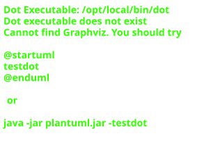

架构#
Architecture
Conda is a complex system of many components and can be hard to understand for users and developers alike. The following C4 model based architecture diagrams should help in that regard. As a refresher, the C4 model tries to visualize complex software systems at different levels of detail, and explaining the functionality to different types of audience.
备注
These diagrams represent the state of conda at the time when the documentation was automatically build as part of the development process for conda 0.0.0.dev0+placeholder (2025 年 04 月 21 日).
C4 stands for the for levels:
第一层：上下文#
Level 1: Context
This is the overview, 30,000 feet view on conda, to better understand how conda in the center of the diagram interacts with other systems and how users relate to it.
More information about how to interpret this diagram can be found in the C4 model documentation about the System Context diagram.

第二层：容器#
Level 2: Container
This level is zooming in to conda on a system level, which was in the center of the Level 1 diagram, to show the high-level shape of the software architecture of and the various responsibilities in conda, including major technology choices and communication patterns between the various containers.
More information about how to interpret the following diagrams can be found in the C4 model documentation about the Container diagram.
通道#
Channels
The following diagram focuses on the channels container from the level 1 diagram.
![@startuml
!include <C4/C4_Container.puml>
!include ../includes/base.puml
' Define the items different to the base diagram
Container(conda, "conda", "Software package and environment management system")
Container_Boundary(channels, "Channels") {
Container_Boundary(community, "Community-maintained channels") {
ContainerDb_Ext(bioconda, "bioconda", "Bioinformatics software")
ContainerDb_Ext(conda_forge, "conda-forge", "General purpose software")
ContainerDb_Ext(other_channels, "other", "Other channels")
}
Container_Boundary(defaults, "Defaults channel, maintained by Anaconda Inc.") {
ContainerDb(msys2, "MSYS2", "Windows-only software packages")
ContainerDb(mro, "R", "Microsoft R Open software packages")
ContainerDb(anaconda, "anaconda", "Main software packages")
}
}
' Include relationships here once we've set the differences.
!include ../includes/rels.puml
@enduml](../_images/plantuml-491672c7014f50b3d376340a40c96e4c808d09b6.svg)
Conda#
Conda
The following diagram focuses on the conda container from the level 1 diagram.
![@startuml
!include <C4/C4_Container.puml>
!include ../includes/base.puml
' Define the items different to the base diagram
Container_Boundary(conda, "Conda") {
Container(conda_api, "conda.api", "Python API", "High-level, public Python API to interact with lower-level functionality")
Container(conda_base, "conda.base", "Base", "Fast base code loaded on every conda run")
Container(conda_cli, "conda.cli", "Command Line Interface", "Handles user commands and is divided into subcommands")
Container(conda_core, "conda.core", "Core", "Contains core application logic, e.g. solver")
Container(conda_common, "conda.common", "Common", "Generic code that lives next to rest of Conda")
Container(conda_exceptions, "conda.exceptions", "Exceptions", "Project-wide exception subclasses")
Container(conda_gateways, "conda.gateways", "I/O", "File and network handling code")
Container(conda_models, "conda.models", "Models", "Data classes for conda-internal handling")
Container(conda_resolve, "conda.resolve", "Resolve", "Low-level solver code")
Container(conda_shell, "conda.shell", "Shell", "Shell support code")
Container(conda_vendor, "conda._vendor", "Vendor", "Manually maintained")
}
ContainerDb_Ext(channels, "Channels", "Software package storage systems")
' Include relationships here once we've set the differences.
!include ../includes/rels.puml
@enduml](../_images/plantuml-2d88cec20938012064257915682514063b5177f7.svg)
第三层：组件#
Level 3: Component
Yet another zoom-in, in which individual containers from Level 2 are decomposed to show major building blocks in conda and their interactions. Those building blocks are called components in the sense that they each have a higher function and relate to an identifiable responsibility and implementation details.
![@startuml packages_conda
set namespaceSeparator none
left to right direction
skinparam nodesep 5
skinparam ranksep 5
package "conda" as conda #77AADD {
}
package "conda.__main__" as conda.__main__ #77AADD {
}
package "conda.activate" as conda.activate #77AADD {
}
package "conda.auxlib" as conda.auxlib #99DDFF {
}
package "conda.auxlib.collection" as conda.auxlib.collection #99DDFF {
}
package "conda.auxlib.decorators" as conda.auxlib.decorators #99DDFF {
}
package "conda.auxlib.entity" as conda.auxlib.entity #99DDFF {
}
package "conda.auxlib.exceptions" as conda.auxlib.exceptions #99DDFF {
}
package "conda.auxlib.ish" as conda.auxlib.ish #99DDFF {
}
package "conda.auxlib.logz" as conda.auxlib.logz #99DDFF {
}
package "conda.auxlib.type_coercion" as conda.auxlib.type_coercion #99DDFF {
}
package "conda.base" as conda.base #44BB99 {
}
package "conda.base.constants" as conda.base.constants #44BB99 {
}
package "conda.base.context" as conda.base.context #44BB99 {
}
package "conda.cli" as conda.cli #BBCC33 {
}
package "conda.cli.actions" as conda.cli.actions #BBCC33 {
}
package "conda.cli.common" as conda.cli.common #BBCC33 {
}
package "conda.cli.conda_argparse" as conda.cli.conda_argparse #BBCC33 {
}
package "conda.cli.find_commands" as conda.cli.find_commands #BBCC33 {
}
package "conda.cli.helpers" as conda.cli.helpers #BBCC33 {
}
package "conda.cli.install" as conda.cli.install #BBCC33 {
}
package "conda.cli.main" as conda.cli.main #BBCC33 {
}
package "conda.cli.main_clean" as conda.cli.main_clean #BBCC33 {
}
package "conda.cli.main_commands" as conda.cli.main_commands #BBCC33 {
}
package "conda.cli.main_compare" as conda.cli.main_compare #BBCC33 {
}
package "conda.cli.main_config" as conda.cli.main_config #BBCC33 {
}
package "conda.cli.main_create" as conda.cli.main_create #BBCC33 {
}
package "conda.cli.main_env" as conda.cli.main_env #BBCC33 {
}
package "conda.cli.main_env_config" as conda.cli.main_env_config #BBCC33 {
}
package "conda.cli.main_env_create" as conda.cli.main_env_create #BBCC33 {
}
package "conda.cli.main_env_list" as conda.cli.main_env_list #BBCC33 {
}
package "conda.cli.main_env_remove" as conda.cli.main_env_remove #BBCC33 {
}
package "conda.cli.main_env_update" as conda.cli.main_env_update #BBCC33 {
}
package "conda.cli.main_env_vars" as conda.cli.main_env_vars #BBCC33 {
}
package "conda.cli.main_export" as conda.cli.main_export #BBCC33 {
}
package "conda.cli.main_info" as conda.cli.main_info #BBCC33 {
}
package "conda.cli.main_init" as conda.cli.main_init #BBCC33 {
}
package "conda.cli.main_install" as conda.cli.main_install #BBCC33 {
}
package "conda.cli.main_list" as conda.cli.main_list #BBCC33 {
}
package "conda.cli.main_mock_activate" as conda.cli.main_mock_activate #BBCC33 {
}
package "conda.cli.main_mock_deactivate" as conda.cli.main_mock_deactivate #BBCC33 {
}
package "conda.cli.main_notices" as conda.cli.main_notices #BBCC33 {
}
package "conda.cli.main_package" as conda.cli.main_package #BBCC33 {
}
package "conda.cli.main_pip" as conda.cli.main_pip #BBCC33 {
}
package "conda.cli.main_remove" as conda.cli.main_remove #BBCC33 {
}
package "conda.cli.main_rename" as conda.cli.main_rename #BBCC33 {
}
package "conda.cli.main_run" as conda.cli.main_run #BBCC33 {
}
package "conda.cli.main_search" as conda.cli.main_search #BBCC33 {
}
package "conda.cli.main_update" as conda.cli.main_update #BBCC33 {
}
package "conda.cli.python_api" as conda.cli.python_api #BBCC33 {
}
package "conda.common" as conda.common #AAAA00 {
}
package "conda.common._logic" as conda.common._logic #AAAA00 {
}
package "conda.common._os" as conda.common._os #EEDD88 {
}
package "conda.common._os.linux" as conda.common._os.linux #EEDD88 {
}
package "conda.common._os.osx" as conda.common._os.osx #EEDD88 {
}
package "conda.common._os.unix" as conda.common._os.unix #EEDD88 {
}
package "conda.common._os.windows" as conda.common._os.windows #EEDD88 {
}
package "conda.common.configuration" as conda.common.configuration #AAAA00 {
}
package "conda.common.constants" as conda.common.constants #AAAA00 {
}
package "conda.common.disk" as conda.common.disk #AAAA00 {
}
package "conda.common.io" as conda.common.io #AAAA00 {
}
package "conda.common.iterators" as conda.common.iterators #AAAA00 {
}
package "conda.common.logic" as conda.common.logic #AAAA00 {
}
package "conda.common.path" as conda.common.path #EE8866 {
}
package "conda.common.path._cygpath" as conda.common.path._cygpath #EE8866 {
}
package "conda.common.path.directories" as conda.common.path.directories #EE8866 {
}
package "conda.common.path.python" as conda.common.path.python #EE8866 {
}
package "conda.common.path.windows" as conda.common.path.windows #EE8866 {
}
package "conda.common.pkg_formats" as conda.common.pkg_formats #FFAABB {
}
package "conda.common.pkg_formats.python" as conda.common.pkg_formats.python #FFAABB {
}
package "conda.common.serialize" as conda.common.serialize #AAAA00 {
}
package "conda.common.signals" as conda.common.signals #AAAA00 {
}
package "conda.common.toposort" as conda.common.toposort #AAAA00 {
}
package "conda.common.url" as conda.common.url #AAAA00 {
}
package "conda.core" as conda.core #DDDDDD {
}
package "conda.core.envs_manager" as conda.core.envs_manager #DDDDDD {
}
package "conda.core.index" as conda.core.index #DDDDDD {
}
package "conda.core.initialize" as conda.core.initialize #DDDDDD {
}
package "conda.core.link" as conda.core.link #DDDDDD {
}
package "conda.core.package_cache_data" as conda.core.package_cache_data #DDDDDD {
}
package "conda.core.path_actions" as conda.core.path_actions #DDDDDD {
}
package "conda.core.portability" as conda.core.portability #DDDDDD {
}
package "conda.core.prefix_data" as conda.core.prefix_data #DDDDDD {
}
package "conda.core.solve" as conda.core.solve #DDDDDD {
}
package "conda.core.subdir_data" as conda.core.subdir_data #DDDDDD {
}
package "conda.deprecations" as conda.deprecations #77AADD {
}
package "conda.env" as conda.env #77AADD {
}
package "conda.env.env" as conda.env.env #77AADD {
}
package "conda.env.installers" as conda.env.installers #99DDFF {
}
package "conda.env.installers.base" as conda.env.installers.base #99DDFF {
}
package "conda.env.installers.conda" as conda.env.installers.conda #99DDFF {
}
package "conda.env.installers.pip" as conda.env.installers.pip #99DDFF {
}
package "conda.env.pip_util" as conda.env.pip_util #77AADD {
}
package "conda.env.specs" as conda.env.specs #44BB99 {
}
package "conda.env.specs.binstar" as conda.env.specs.binstar #44BB99 {
}
package "conda.env.specs.requirements" as conda.env.specs.requirements #44BB99 {
}
package "conda.env.specs.yaml_file" as conda.env.specs.yaml_file #44BB99 {
}
package "conda.exception_handler" as conda.exception_handler #77AADD {
}
package "conda.exceptions" as conda.exceptions #77AADD {
}
package "conda.gateways" as conda.gateways #BBCC33 {
}
package "conda.gateways.anaconda_client" as conda.gateways.anaconda_client #BBCC33 {
}
package "conda.gateways.connection" as conda.gateways.connection #AAAA00 {
}
package "conda.gateways.connection.adapters" as conda.gateways.connection.adapters #EEDD88 {
}
package "conda.gateways.connection.adapters.ftp" as conda.gateways.connection.adapters.ftp #EEDD88 {
}
package "conda.gateways.connection.adapters.http" as conda.gateways.connection.adapters.http #EEDD88 {
}
package "conda.gateways.connection.adapters.localfs" as conda.gateways.connection.adapters.localfs #EEDD88 {
}
package "conda.gateways.connection.adapters.s3" as conda.gateways.connection.adapters.s3 #EEDD88 {
}
package "conda.gateways.connection.download" as conda.gateways.connection.download #AAAA00 {
}
package "conda.gateways.connection.session" as conda.gateways.connection.session #AAAA00 {
}
package "conda.gateways.disk" as conda.gateways.disk #EE8866 {
}
package "conda.gateways.disk.create" as conda.gateways.disk.create #EE8866 {
}
package "conda.gateways.disk.delete" as conda.gateways.disk.delete #EE8866 {
}
package "conda.gateways.disk.link" as conda.gateways.disk.link #EE8866 {
}
package "conda.gateways.disk.lock" as conda.gateways.disk.lock #EE8866 {
}
package "conda.gateways.disk.permissions" as conda.gateways.disk.permissions #EE8866 {
}
package "conda.gateways.disk.read" as conda.gateways.disk.read #EE8866 {
}
package "conda.gateways.disk.test" as conda.gateways.disk.test #EE8866 {
}
package "conda.gateways.disk.update" as conda.gateways.disk.update #EE8866 {
}
package "conda.gateways.logging" as conda.gateways.logging #BBCC33 {
}
package "conda.gateways.repodata" as conda.gateways.repodata #FFAABB {
}
package "conda.gateways.repodata.jlap" as conda.gateways.repodata.jlap #DDDDDD {
}
package "conda.gateways.repodata.jlap.core" as conda.gateways.repodata.jlap.core #DDDDDD {
}
package "conda.gateways.repodata.jlap.fetch" as conda.gateways.repodata.jlap.fetch #DDDDDD {
}
package "conda.gateways.repodata.jlap.interface" as conda.gateways.repodata.jlap.interface #DDDDDD {
}
package "conda.gateways.repodata.lock" as conda.gateways.repodata.lock #FFAABB {
}
package "conda.gateways.subprocess" as conda.gateways.subprocess #BBCC33 {
}
package "conda.history" as conda.history #77AADD {
}
package "conda.instructions" as conda.instructions #77AADD {
}
package "conda.models" as conda.models #77AADD {
}
package "conda.models.channel" as conda.models.channel #77AADD {
}
package "conda.models.dist" as conda.models.dist #77AADD {
}
package "conda.models.enums" as conda.models.enums #77AADD {
}
package "conda.models.leased_path_entry" as conda.models.leased_path_entry #77AADD {
}
package "conda.models.match_spec" as conda.models.match_spec #77AADD {
}
package "conda.models.package_info" as conda.models.package_info #77AADD {
}
package "conda.models.prefix_graph" as conda.models.prefix_graph #77AADD {
}
package "conda.models.records" as conda.models.records #77AADD {
}
package "conda.models.version" as conda.models.version #77AADD {
}
package "conda.notices" as conda.notices #99DDFF {
}
package "conda.notices.cache" as conda.notices.cache #99DDFF {
}
package "conda.notices.core" as conda.notices.core #99DDFF {
}
package "conda.notices.fetch" as conda.notices.fetch #99DDFF {
}
package "conda.notices.types" as conda.notices.types #99DDFF {
}
package "conda.notices.views" as conda.notices.views #99DDFF {
}
package "conda.plan" as conda.plan #77AADD {
}
package "conda.plugins" as conda.plugins #44BB99 {
}
package "conda.plugins.hookspec" as conda.plugins.hookspec #44BB99 {
}
package "conda.plugins.manager" as conda.plugins.manager #44BB99 {
}
package "conda.plugins.post_solves" as conda.plugins.post_solves #BBCC33 {
}
package "conda.plugins.post_solves.signature_verification" as conda.plugins.post_solves.signature_verification #BBCC33 {
}
package "conda.plugins.reporter_backends" as conda.plugins.reporter_backends #AAAA00 {
}
package "conda.plugins.reporter_backends.console" as conda.plugins.reporter_backends.console #AAAA00 {
}
package "conda.plugins.reporter_backends.json" as conda.plugins.reporter_backends.json #AAAA00 {
}
package "conda.plugins.solvers" as conda.plugins.solvers #44BB99 {
}
package "conda.plugins.subcommands" as conda.plugins.subcommands #EEDD88 {
}
package "conda.plugins.subcommands.doctor" as conda.plugins.subcommands.doctor #EE8866 {
}
package "conda.plugins.subcommands.doctor.health_checks" as conda.plugins.subcommands.doctor.health_checks #EE8866 {
}
package "conda.plugins.types" as conda.plugins.types #44BB99 {
}
package "conda.plugins.virtual_packages" as conda.plugins.virtual_packages #FFAABB {
}
package "conda.plugins.virtual_packages.archspec" as conda.plugins.virtual_packages.archspec #FFAABB {
}
package "conda.plugins.virtual_packages.conda" as conda.plugins.virtual_packages.conda #FFAABB {
}
package "conda.plugins.virtual_packages.cuda" as conda.plugins.virtual_packages.cuda #FFAABB {
}
package "conda.plugins.virtual_packages.freebsd" as conda.plugins.virtual_packages.freebsd #FFAABB {
}
package "conda.plugins.virtual_packages.linux" as conda.plugins.virtual_packages.linux #FFAABB {
}
package "conda.plugins.virtual_packages.osx" as conda.plugins.virtual_packages.osx #FFAABB {
}
package "conda.plugins.virtual_packages.windows" as conda.plugins.virtual_packages.windows #FFAABB {
}
package "conda.reporters" as conda.reporters #77AADD {
}
package "conda.resolve" as conda.resolve #77AADD {
}
package "conda.testing" as conda.testing #DDDDDD {
}
package "conda.testing.cases" as conda.testing.cases #DDDDDD {
}
package "conda.testing.fixtures" as conda.testing.fixtures #DDDDDD {
}
package "conda.testing.gateways" as conda.testing.gateways #77AADD {
}
package "conda.testing.gateways.fixtures" as conda.testing.gateways.fixtures #77AADD {
}
package "conda.testing.helpers" as conda.testing.helpers #DDDDDD {
}
package "conda.testing.integration" as conda.testing.integration #DDDDDD {
}
package "conda.testing.notices" as conda.testing.notices #99DDFF {
}
package "conda.testing.notices.fixtures" as conda.testing.notices.fixtures #99DDFF {
}
package "conda.testing.notices.helpers" as conda.testing.notices.helpers #99DDFF {
}
package "conda.testing.solver_helpers" as conda.testing.solver_helpers #DDDDDD {
}
package "conda.trust" as conda.trust #44BB99 {
}
package "conda.trust.constants" as conda.trust.constants #44BB99 {
}
package "conda.trust.signature_verification" as conda.trust.signature_verification #44BB99 {
}
conda --> conda.exceptions
conda.__main__ --> conda.cli
conda.__main__ --> conda.cli.main
conda.activate --> conda.base.constants
conda.activate --> conda.base.context
conda.activate --> conda.cli.conda_argparse
conda.activate --> conda.cli.find_commands
conda.activate --> conda.common.path
conda.activate --> conda.common.path._cygpath
conda.activate --> conda.deprecations
conda.activate --> conda.exceptions
conda.auxlib.entity --> conda.auxlib.collection
conda.auxlib.entity --> conda.auxlib.exceptions
conda.auxlib.entity --> conda.auxlib.ish
conda.auxlib.entity --> conda.auxlib.logz
conda.auxlib.entity --> conda.auxlib.type_coercion
conda.auxlib.type_coercion --> conda.auxlib.decorators
conda.auxlib.type_coercion --> conda.auxlib.exceptions
conda.base.context --> conda.base.constants
conda.cli --> conda.cli.main
conda.cli.actions --> conda.cli.common
conda.cli.conda_argparse --> conda.cli.actions
conda.cli.conda_argparse --> conda.cli.common
conda.cli.conda_argparse --> conda.cli.find_commands
conda.cli.conda_argparse --> conda.cli.helpers
conda.cli.conda_argparse --> conda.cli.main_clean
conda.cli.conda_argparse --> conda.cli.main_commands
conda.cli.conda_argparse --> conda.cli.main_compare
conda.cli.conda_argparse --> conda.cli.main_config
conda.cli.conda_argparse --> conda.cli.main_create
conda.cli.conda_argparse --> conda.cli.main_env
conda.cli.conda_argparse --> conda.cli.main_export
conda.cli.conda_argparse --> conda.cli.main_info
conda.cli.conda_argparse --> conda.cli.main_init
conda.cli.conda_argparse --> conda.cli.main_install
conda.cli.conda_argparse --> conda.cli.main_list
conda.cli.conda_argparse --> conda.cli.main_mock_activate
conda.cli.conda_argparse --> conda.cli.main_mock_deactivate
conda.cli.conda_argparse --> conda.cli.main_notices
conda.cli.conda_argparse --> conda.cli.main_package
conda.cli.conda_argparse --> conda.cli.main_remove
conda.cli.conda_argparse --> conda.cli.main_rename
conda.cli.conda_argparse --> conda.cli.main_run
conda.cli.conda_argparse --> conda.cli.main_search
conda.cli.conda_argparse --> conda.cli.main_update
conda.cli.find_commands --> conda.cli.common
conda.cli.helpers --> conda.cli.actions
conda.cli.helpers --> conda.cli.common
conda.cli.install --> conda.cli.common
conda.cli.install --> conda.cli.common
conda.cli.install --> conda.cli.main_config
conda.cli.main --> conda.cli.common
conda.cli.main --> conda.cli.conda_argparse
conda.cli.main_clean --> conda.cli.actions
conda.cli.main_clean --> conda.cli.common
conda.cli.main_clean --> conda.cli.helpers
conda.cli.main_commands --> conda.cli.conda_argparse
conda.cli.main_commands --> conda.cli.find_commands
conda.cli.main_compare --> conda.cli.common
conda.cli.main_compare --> conda.cli.helpers
conda.cli.main_config --> conda.cli.common
conda.cli.main_config --> conda.cli.common
conda.cli.main_config --> conda.cli.helpers
conda.cli.main_create --> conda.cli.actions
conda.cli.main_create --> conda.cli.common
conda.cli.main_create --> conda.cli.helpers
conda.cli.main_create --> conda.cli.install
conda.cli.main_env_config --> conda.cli.main_env_vars
conda.cli.main_env_create --> conda.cli.common
conda.cli.main_env_create --> conda.cli.helpers
conda.cli.main_env_list --> conda.cli.helpers
conda.cli.main_env_remove --> conda.cli.helpers
conda.cli.main_env_update --> conda.cli.helpers
conda.cli.main_env_vars --> conda.cli.helpers
conda.cli.main_export --> conda.cli.common
conda.cli.main_export --> conda.cli.common
conda.cli.main_export --> conda.cli.helpers
conda.cli.main_info --> conda.cli.common
conda.cli.main_info --> conda.cli.find_commands
conda.cli.main_info --> conda.cli.helpers
conda.cli.main_init --> conda.cli.common
conda.cli.main_init --> conda.cli.helpers
conda.cli.main_install --> conda.cli.actions
conda.cli.main_install --> conda.cli.common
conda.cli.main_install --> conda.cli.helpers
conda.cli.main_install --> conda.cli.install
conda.cli.main_list --> conda.cli.common
conda.cli.main_list --> conda.cli.helpers
conda.cli.main_notices --> conda.cli.helpers
conda.cli.main_package --> conda.cli.common
conda.cli.main_package --> conda.cli.helpers
conda.cli.main_pip --> conda.cli.main
conda.cli.main_remove --> conda.cli.actions
conda.cli.main_remove --> conda.cli.common
conda.cli.main_remove --> conda.cli.common
conda.cli.main_remove --> conda.cli.helpers
conda.cli.main_remove --> conda.cli.install
conda.cli.main_rename --> conda.cli.common
conda.cli.main_rename --> conda.cli.helpers
conda.cli.main_rename --> conda.cli.install
conda.cli.main_rename --> conda.deprecations
conda.cli.main_rename --> conda.exceptions
conda.cli.main_rename --> conda.gateways.disk.test
conda.cli.main_run --> conda.cli.actions
conda.cli.main_run --> conda.cli.common
conda.cli.main_run --> conda.cli.common
conda.cli.main_run --> conda.cli.helpers
conda.cli.main_search --> conda.cli.common
conda.cli.main_search --> conda.cli.helpers
conda.cli.main_update --> conda.cli.common
conda.cli.main_update --> conda.cli.helpers
conda.cli.main_update --> conda.cli.install
conda.cli.python_api --> conda.cli.common
conda.cli.python_api --> conda.cli.conda_argparse
conda.common._logic --> conda.common.constants
conda.common._os --> conda.common._os.windows
conda.common.configuration --> conda.common.constants
conda.common.configuration --> conda.common.serialize
conda.common.io --> conda.common.constants
conda.common.io --> conda.common.io
conda.common.io --> conda.common.path
conda.common.logic --> conda.common._logic
conda.common.path --> conda.common.path.directories
conda.common.path --> conda.common.path.python
conda.common.path --> conda.common.path.windows
conda.common.path --> conda.common.url
conda.common.path.windows --> conda.common.path._cygpath
conda.common.serialize --> conda.common.io
conda.common.url --> conda.common.path
conda.core.envs_manager --> conda.core.prefix_data
conda.core.index --> conda.core.package_cache_data
conda.core.index --> conda.core.prefix_data
conda.core.index --> conda.core.subdir_data
conda.core.initialize --> conda.core.portability
conda.core.link --> conda.core.package_cache_data
conda.core.link --> conda.core.path_actions
conda.core.link --> conda.core.prefix_data
conda.core.package_cache_data --> conda.core.path_actions
conda.core.path_actions --> conda.core.envs_manager
conda.core.path_actions --> conda.core.package_cache_data
conda.core.path_actions --> conda.core.portability
conda.core.path_actions --> conda.core.prefix_data
conda.core.solve --> conda.core.index
conda.core.solve --> conda.core.link
conda.core.solve --> conda.core.prefix_data
conda.core.solve --> conda.core.subdir_data
conda.deprecations --> conda.common.constants
conda.env.installers.conda --> conda.env.installers.base
conda.env.specs --> conda.env.specs.requirements
conda.env.specs --> conda.env.specs.yaml_file
conda.exception_handler --> conda.auxlib.entity
conda.exception_handler --> conda.auxlib.type_coercion
conda.exception_handler --> conda.base.context
conda.exception_handler --> conda.cli.common
conda.exception_handler --> conda.cli.main
conda.exception_handler --> conda.cli.main_info
conda.exception_handler --> conda.common.io
conda.exception_handler --> conda.exceptions
conda.exceptions --> conda.auxlib.entity
conda.exceptions --> conda.auxlib.ish
conda.exceptions --> conda.auxlib.logz
conda.exceptions --> conda.base.constants
conda.exceptions --> conda.base.context
conda.exceptions --> conda.cli.find_commands
conda.exceptions --> conda.cli.main
conda.exceptions --> conda.common.io
conda.exceptions --> conda.common.iterators
conda.exceptions --> conda.common.signals
conda.exceptions --> conda.common.url
conda.exceptions --> conda.deprecations
conda.exceptions --> conda.exception_handler
conda.exceptions --> conda.models.channel
conda.exceptions --> conda.models.match_spec
conda.exceptions --> conda.models.records
conda.gateways.anaconda_client --> conda.gateways.disk.delete
conda.gateways.anaconda_client --> conda.gateways.logging
conda.gateways.connection.download --> conda.gateways.connection.session
conda.gateways.connection.session --> conda.gateways.connection.adapters.ftp
conda.gateways.connection.session --> conda.gateways.connection.adapters.http
conda.gateways.connection.session --> conda.gateways.connection.adapters.localfs
conda.gateways.connection.session --> conda.gateways.connection.adapters.s3
conda.gateways.disk --> conda.gateways.logging
conda.gateways.disk --> conda.gateways.subprocess
conda.gateways.disk.create --> conda.gateways.disk.delete
conda.gateways.disk.create --> conda.gateways.disk.link
conda.gateways.disk.create --> conda.gateways.disk.permissions
conda.gateways.disk.create --> conda.gateways.disk.update
conda.gateways.disk.delete --> conda.gateways.disk.link
conda.gateways.disk.delete --> conda.gateways.disk.permissions
conda.gateways.disk.permissions --> conda.gateways.disk.link
conda.gateways.disk.read --> conda.gateways.disk.create
conda.gateways.disk.read --> conda.gateways.disk.link
conda.gateways.disk.test --> conda.gateways.disk.create
conda.gateways.disk.test --> conda.gateways.disk.delete
conda.gateways.disk.test --> conda.gateways.disk.link
conda.gateways.disk.update --> conda.gateways.disk.delete
conda.gateways.disk.update --> conda.gateways.disk.link
conda.gateways.logging --> conda.gateways.logging
conda.gateways.repodata --> conda.gateways.connection
conda.gateways.repodata --> conda.gateways.connection.session
conda.gateways.repodata --> conda.gateways.disk
conda.gateways.repodata --> conda.gateways.disk.lock
conda.gateways.repodata --> conda.gateways.repodata.jlap.interface
conda.gateways.repodata.jlap.fetch --> conda.common.url
conda.gateways.repodata.jlap.fetch --> conda.gateways.repodata.jlap.core
conda.gateways.subprocess --> conda.gateways.logging
conda.gateways.subprocess --> conda.gateways.subprocess
conda.history --> conda.auxlib.ish
conda.history --> conda.base.constants
conda.history --> conda.base.context
conda.history --> conda.common.iterators
conda.history --> conda.common.path
conda.history --> conda.core.prefix_data
conda.history --> conda.exceptions
conda.history --> conda.gateways.disk.update
conda.history --> conda.models.dist
conda.history --> conda.models.match_spec
conda.history --> conda.models.version
conda.instructions --> conda.core.link
conda.instructions --> conda.core.package_cache_data
conda.instructions --> conda.exceptions
conda.instructions --> conda.gateways.disk.link
conda.models.dist --> conda.models.channel
conda.models.dist --> conda.models.match_spec
conda.models.dist --> conda.models.package_info
conda.models.dist --> conda.models.records
conda.models.match_spec --> conda.models.channel
conda.models.match_spec --> conda.models.records
conda.models.match_spec --> conda.models.version
conda.models.package_info --> conda.models.channel
conda.models.package_info --> conda.models.enums
conda.models.package_info --> conda.models.records
conda.models.prefix_graph --> conda.models.enums
conda.models.prefix_graph --> conda.models.match_spec
conda.models.records --> conda.models.channel
conda.models.records --> conda.models.enums
conda.models.records --> conda.models.match_spec
conda.notices --> conda.notices.core
conda.notices.cache --> conda.notices.types
conda.notices.core --> conda.notices.types
conda.notices.fetch --> conda.notices.cache
conda.notices.fetch --> conda.notices.types
conda.notices.views --> conda.notices.types
conda.plan --> conda.base.constants
conda.plan --> conda.base.context
conda.plan --> conda.common.constants
conda.plan --> conda.common.io
conda.plan --> conda.common.iterators
conda.plan --> conda.core.index
conda.plan --> conda.core.link
conda.plan --> conda.deprecations
conda.plan --> conda.instructions
conda.plan --> conda.models.channel
conda.plan --> conda.models.dist
conda.plan --> conda.models.enums
conda.plan --> conda.models.match_spec
conda.plan --> conda.models.records
conda.plan --> conda.models.version
conda.plugins --> conda.plugins.hookspec
conda.plugins --> conda.plugins.types
conda.plugins.manager --> conda.plugins.hookspec
conda.plugins.manager --> conda.plugins.subcommands.doctor
conda.plugins.manager --> conda.plugins.subcommands.doctor.health_checks
conda.reporters --> conda.base.context
conda.reporters --> conda.exceptions
conda.resolve --> conda.auxlib.decorators
conda.resolve --> conda.base.constants
conda.resolve --> conda.base.context
conda.resolve --> conda.common.io
conda.resolve --> conda.common.iterators
conda.resolve --> conda.common.logic
conda.resolve --> conda.common.toposort
conda.resolve --> conda.exceptions
conda.resolve --> conda.models.channel
conda.resolve --> conda.models.enums
conda.resolve --> conda.models.match_spec
conda.resolve --> conda.models.records
conda.resolve --> conda.models.version
conda.testing --> conda.activate
conda.testing --> conda.deprecations
conda.testing --> conda.testing.fixtures
conda.testing.fixtures --> conda.deprecations
conda.testing.integration --> conda.testing.gateways
conda.trust.signature_verification --> conda.trust.constants
conda.plugins.hookspec ..> conda.plugins.types
conda.plugins.manager ..> conda.plugins.types
conda.reporters ..> conda.plugins.types
@enduml](../_images/plantuml-15451486e4babbf4f674bf821ca2d06eb4360b6d.svg)
More information about how to interpret this diagram can be found in the C4 model documentation about the Component diagram.
第四层：代码#
Level 4: Code
This part is auto-generated based on the current code and shows how the code is structured and how it interacts. For brevity this ignores a number of subsystems like the public API and exports modules, utility and vendor packages.
More information about how to interpret this diagram can be found in the C4 model documentation about the Code diagram.
![@startuml classes_conda
set namespaceSeparator none
left to right direction
skinparam nodesep 5
skinparam ranksep 5
class "ActionGroup" as conda.core.link.ActionGroup #DDDDDD {
actions : Iterable[_Action]
pkg_data : PackageInfo | None
target_prefix : str
type : str
}
class "<color:red>ActivateHelp</color>" as conda.exceptions.ActivateHelp #77AADD {
}
class "AggregateCompileMultiPycAction" as conda.core.path_actions.AggregateCompileMultiPycAction #DDDDDD {
}
class "Arch" as conda.models.enums.Arch #77AADD {
name
from_sys()
}
class "ArgParseRawParameter" as conda.common.configuration.ArgParseRawParameter #AAAA00 {
source : str
keyflag()
make_raw_parameters(args_from_argparse)
value(parameter_obj)
valueflags(parameter_obj)
}
class "<color:red>ArgumentError</color>" as conda.exceptions.ArgumentError #77AADD {
return_code : int
}
class "ArgumentParser" as conda.cli.conda_argparse.ArgumentParser #BBCC33 {
parse_args()
}
class "AttrDict" as conda.auxlib.collection.AttrDict #99DDFF {
}
class "AuthBase" as requests.auth.AuthBase #BBCC33 {
}
class "<color:red>AuthenticationError</color>" as conda.exceptions.AuthenticationError #77AADD {
}
class "AuxlibError" as conda.auxlib.exceptions.AuxlibError #99DDFF {
}
class "BaseAdapter" as requests.adapters.BaseAdapter #BBCC33 {
{abstract}close()
{abstract}send(request, stream, timeout, verify, cert, proxies)
}
class "BaseSpec" as conda.models.version.BaseSpec #77AADD {
exact_value
match
raw_value
spec
spec_str
all_match(spec_str)
always_true_match(spec_str)
any_match(spec_str)
exact_match(spec_str)
is_exact()
{abstract}merge(other)
operator_match(spec_str)
regex_match(spec_str)
}
class "BaseTestCase" as conda.testing.cases.BaseTestCase #DDDDDD {
fixture_names : tuple
auto_injector_fixture(request)
}
class "<color:red>BasicClobberError</color>" as conda.exceptions.BasicClobberError #77AADD {
}
class "<color:red>BinaryPrefixReplacementError</color>" as conda.exceptions.BinaryPrefixReplacementError #77AADD {
}
class "BinstarSpec" as conda.env.specs.binstar.BinstarSpec #44BB99 {
binstar
environment
file_data
msg : NoneType
name : NoneType
package
packagename
username
can_handle() -> bool
valid_name() -> bool
valid_package() -> bool
}
class "BooleanField" as conda.auxlib.entity.BooleanField #99DDFF {
box(instance, instance_type, val)
}
class "BuildNumberMatch" as conda.models.version.BuildNumberMatch #77AADD {
exact_value
matcher_vo
operator_func
regex
get_matcher(vspec)
merge(other)
union(other)
}
class "CacheUrlAction" as conda.core.path_actions.CacheUrlAction #DDDDDD {
hold_path
md5 : NoneType
sha256 : NoneType
size : NoneType
target_full_path
target_package_basename
target_pkgs_dir
url
cleanup()
execute(progress_update_callback)
reverse()
verify()
}
class "<color:red>CancelOperation</color>" as conda.gateways.disk.update.CancelOperation #EE8866 {
}
class "CaptureTarget" as conda.common.io.CaptureTarget #AAAA00 {
name
}
class "CapturedText" as conda.common.io.captured.CapturedText #AAAA00 {
stderr : NoneType, StringIO
stdout : StringIO
}
class "CaseInsensitiveDict" as requests.structures.CaseInsensitiveDict #BBCC33 {
copy()
lower_items()
}
class "CaseInsensitiveStrMatch" as conda.models.match_spec.CaseInsensitiveStrMatch #77AADD {
match(other)
}
class "ChangeReport" as conda.core.link.ChangeReport #DDDDDD {
downgraded_precs : Iterable[PackageRecord]
fetch_precs : Iterable[PackageRecord]
new_precs : Iterable[PackageRecord]
prefix : str
removed_precs : Iterable[PackageRecord]
revised_precs : Iterable[PackageRecord]
specs_to_add : Iterable[MatchSpec]
specs_to_remove : Iterable[MatchSpec]
superseded_precs : Iterable[PackageRecord]
updated_precs : Iterable[PackageRecord]
}
class "Channel" as conda.models.channel.Channel #77AADD {
auth : NoneType
base_url
base_urls
canonical_name
channel_location
channel_name
location : NoneType
name : str
package_filename : NoneType
platform : NoneType
scheme : NoneType
subdir
subdir_url
token : NoneType
url_channel_wtf
dump()
from_channel_name(channel_name)
from_url(url)
from_value(value: str | None) -> Self
make_simple_channel(channel_alias, channel_url, name)
url(with_credentials)
urls(with_credentials, subdirs)
}
class "ChannelAuthBase" as conda.plugins.types.ChannelAuthBase #44BB99 {
}
class "<color:red>ChannelDenied</color>" as conda.exceptions.ChannelDenied #77AADD {
warning : str
}
class "<color:red>ChannelError</color>" as conda.exceptions.ChannelError #77AADD {
}
class "ChannelField" as conda.models.records.ChannelField #77AADD {
dump(instance, instance_type, val)
}
class "ChannelMatch" as conda.models.match_spec.ChannelMatch #77AADD {
match(other)
}
class "ChannelNameMixin" as conda.plugins.types.ChannelNameMixin #44BB99 {
channel_name : str
}
class "<color:red>ChannelNotAllowed</color>" as conda.exceptions.ChannelNotAllowed #77AADD {
warning : str
}
class "ChannelNotice" as conda.notices.types.ChannelNotice #99DDFF {
channel_name : str | None
created_at : datetime | None
expired_at : datetime | None
id : str
interval : int | None
level
message : str | None
to_dict()
}
class "ChannelNoticeResponse" as conda.notices.types.ChannelNoticeResponse #99DDFF {
json_data : dict | None
name : str
notices
url : str
get_cache_key(url: str, cache_dir: Path) -> Path
}
class "ChannelNoticeResultSet" as conda.notices.types.ChannelNoticeResultSet #99DDFF {
channel_notices : Sequence[ChannelNotice]
total_number_channel_notices : int
viewed_channel_notices : int
}
class "ChannelPriority" as conda.base.constants.ChannelPriority #44BB99 {
name
}
class "ChannelPriorityMeta" as conda.base.constants.ChannelPriorityMeta #44BB99 {
}
class "ChannelType" as conda.models.channel.ChannelType #77AADD {
}
class "<color:red>ChecksumMismatchError</color>" as conda.exceptions.ChecksumMismatchError #77AADD {
}
class "Clauses" as conda.common._logic.Clauses #AAAA00 {
add_clause
add_clauses
m : int
unsat : bool
All(iter, polarity)
And(f, g, polarity, add_new_clauses)
Any(iter, polarity)
AtMostOne_BDD(vals, polarity)
AtMostOne_NSQ(vals, polarity)
BDD(lits, coeffs, nterms, lo, hi, polarity)
Combine(args, polarity)
Eval(func, args, polarity)
ExactlyOne_BDD(vals, polarity)
ExactlyOne_NSQ(vals, polarity)
ITE(c, t, f, polarity, add_new_clauses)
LB_Preprocess(lits, coeffs)
LinearBound(lits, coeffs, lo, hi, preprocess, polarity)
Not(x, polarity, add_new_clauses)
Or(f, g, polarity, add_new_clauses)
Prevent(func)
Require(func)
Xor(f, g, polarity, add_new_clauses)
as_list()
assign(vals)
get_clause_count()
minimize(lits, coeffs, bestsol, trymax)
new_var()
sat(additional, includeIf, limit)
}
class "Clauses" as conda.common.logic.Clauses #AAAA00 {
indices : dict
m
names : dict
unsat
All(iter, polarity, name)
And(f, g, polarity, name)
Any(vals, polarity, name)
AtMostOne(vals, polarity, name)
AtMostOne_BDD(vals, polarity, name)
AtMostOne_NSQ(vals, polarity, name)
ExactlyOne(vals, polarity, name)
ExactlyOne_BDD(vals, polarity, name)
ExactlyOne_NSQ(vals, polarity, name)
ITE(c, t, f, polarity, name)
LinearBound(equation, lo, hi, preprocess, polarity, name)
Not(x, polarity, name)
Or(f, g, polarity, name)
Prevent(what)
Require(what)
Xor(f, g, polarity, name)
add_clause(clause)
add_clauses(clauses)
as_list()
from_index(m)
from_name(name)
get_clause_count()
itersolve(constraints, m)
minimize(objective, bestsol, trymax)
name_var(m, name)
new_var(name)
sat(additional, includeIf, names, limit)
}
class "<color:red>ClobberError</color>" as conda.exceptions.ClobberError #77AADD {
path_conflict
}
class "CmdExeActivator" as conda.activate.CmdExeActivator #77AADD {
command_join : str
export_var_tmpl : str
hook_source_path : NoneType
path_conversion : staticmethod
pathsep_join
run_script_tmpl : str
script_extension : str
sep : str
set_var_tmpl : str
tempfile_extension : str
unset_var_tmpl : str
}
class "<color:red>CommandNotFoundError</color>" as conda.exceptions.CommandNotFoundError #77AADD {
}
class "Commands" as conda.cli.python_api.Commands #BBCC33 {
CLEAN : str
CONFIG : str
CREATE : str
INFO : str
INSTALL : str
LIST : str
NOTICES : str
REMOVE : str
RUN : str
SEARCH : str
UPDATE : str
}
class "Commands" as conda.testing.integration.Commands #DDDDDD {
CLEAN : str
COMPARE : str
CONFIG : str
CREATE : str
INFO : str
INSTALL : str
LIST : str
REMOVE : str
RUN : str
SEARCH : str
UPDATE : str
}
class "Comparable" as tqdm.utils.Comparable #EEDD88 {
}
class "CompileMultiPycAction" as conda.core.path_actions.CompileMultiPycAction #DDDDDD {
package_info
prefix_path_data : NoneType
prefix_paths_data
source_full_paths
source_short_paths
target_full_paths
target_prefix
target_short_paths
transaction_context
{abstract}cleanup()
create_actions(transaction_context, package_info, target_prefix, requested_link_type, file_link_actions)
execute()
reverse()
verify()
}
class "ComposableField" as conda.auxlib.entity.ComposableField #99DDFF {
box(instance, instance_type, val)
dump(instance, instance_type, val)
}
class "CondaAuthHandler" as conda.plugins.types.CondaAuthHandler #44BB99 {
handler : type[ChannelAuthBase]
name : str
}
class "CondaCLIFixture" as conda.testing.fixtures.CondaCLIFixture #DDDDDD {
capsys : CaptureFixture | None
}
class "<color:red>CondaDependencyError</color>" as conda.exceptions.CondaDependencyError #77AADD {
}
class "<color:red>CondaEnvException</color>" as conda.exceptions.CondaEnvException #77AADD {
}
class "<color:red>CondaEnvironmentError</color>" as conda.exceptions.CondaEnvironmentError #77AADD {
}
class "<color:red>CondaError</color>" as conda.CondaError #77AADD {
message
reportable : bool
return_code : int
dump_map()
}
class "<color:red>CondaExitZero</color>" as conda.CondaExitZero #77AADD {
return_code : int
}
class "<color:red>CondaFileIOError</color>" as conda.exceptions.CondaFileIOError #77AADD {
filepath
}
class "<color:red>CondaHTTPError</color>" as conda.exceptions.CondaHTTPError #77AADD {
}
class "CondaHealthCheck" as conda.plugins.types.CondaHealthCheck #44BB99 {
action : Callable[[str, bool], None]
name : str
}
class "<color:red>CondaHistoryError</color>" as conda.exceptions.CondaHistoryError #77AADD {
}
class "<color:red>CondaHistoryWarning</color>" as conda.history.CondaHistoryWarning #77AADD {
}
class "CondaHttpAuth" as conda.gateways.connection.session.CondaHttpAuth #AAAA00 {
add_binstar_token(url)
handle_407(response)
}
class "<color:red>CondaIOError</color>" as conda.exceptions.CondaIOError #77AADD {
}
class "<color:red>CondaImportError</color>" as conda.exceptions.CondaImportError #77AADD {
}
class "<color:red>CondaIndexError</color>" as conda.exceptions.CondaIndexError #77AADD {
}
class "<color:red>CondaKeyError</color>" as conda.exceptions.CondaKeyError #77AADD {
key
msg
}
class "<color:red>CondaMemoryError</color>" as conda.exceptions.CondaMemoryError #77AADD {
}
class "<color:red>CondaMultiError</color>" as conda.CondaMultiError #77AADD {
errors
contains(exception_class)
dump_map()
}
class "<color:red>CondaOSError</color>" as conda.exceptions.CondaOSError #77AADD {
}
class "CondaPluginManager" as conda.plugins.manager.CondaPluginManager #44BB99 {
get_cached_request_headers
get_cached_session_headers
get_cached_solver_backend : NoneType
disable_external_plugins() -> None
get_auth_handler(name: str) -> type[AuthBase] | None
get_canonical_name(plugin: object) -> str
get_hook_results(name: Literal['subcommands']) -> list[CondaSubcommand]
get_reporter_backend(name: str) -> CondaReporterBackend
get_reporter_backends() -> tuple[CondaReporterBackend, ...]
get_request_headers(host: str, path: str) -> dict[str, str]
get_session_headers(host: str) -> dict[str, str]
get_settings() -> dict[str, ParameterLoader]
get_solver_backend(name: str | None) -> type[Solver]
get_solvers() -> dict[str, CondaSolver]
get_subcommands() -> dict[str, CondaSubcommand]
get_virtual_package_records() -> tuple[PackageRecord, ...]
get_virtual_packages() -> tuple[CondaVirtualPackage, ...]
invoke_health_checks(prefix: str, verbose: bool) -> None
invoke_post_commands(command: str) -> None
invoke_post_solves(repodata_fn: str, unlink_precs: tuple[PackageRecord, ...], link_precs: tuple[PackageRecord, ...]) -> None
invoke_pre_commands(command: str) -> None
invoke_pre_solves(specs_to_add: frozenset[MatchSpec], specs_to_remove: frozenset[MatchSpec]) -> None
load_entrypoints(group: str, name: str | None) -> int
load_plugins() -> int
load_settings() -> None
register(plugin, name: str | None) -> str | None
}
class "CondaPostCommand" as conda.plugins.types.CondaPostCommand #44BB99 {
action : Callable[[str], None]
name : str
run_for : set[str]
}
class "CondaPostSolve" as conda.plugins.types.CondaPostSolve #44BB99 {
action : Callable[[str, tuple[PackageRecord, ...], tuple[PackageRecord, ...]], None]
name : str
}
class "CondaPreCommand" as conda.plugins.types.CondaPreCommand #44BB99 {
action : Callable[[str], None]
name : str
run_for : set[str]
}
class "CondaPreSolve" as conda.plugins.types.CondaPreSolve #44BB99 {
action : Callable[[frozenset[MatchSpec], frozenset[MatchSpec]], None]
name : str
}
class "CondaRepoInterface" as conda.gateways.repodata.CondaRepoInterface #BBCC33 {
repodata(state: RepodataState) -> str | None
}
class "CondaReporterBackend" as conda.plugins.types.CondaReporterBackend #44BB99 {
description : str
name : str
renderer : type[ReporterRendererBase]
}
class "CondaRequestHeader" as conda.plugins.types.CondaRequestHeader #44BB99 {
name : str
value : str
}
class "<color:red>CondaSSLError</color>" as conda.exceptions.CondaSSLError #77AADD {
}
class "CondaSession" as conda.gateways.connection.session.CondaSession #AAAA00 {
auth
cert : tuple
verify : bool
cache_clear()
prepare_request(request: Request) -> PreparedRequest
}
class "CondaSessionType" as conda.gateways.connection.session.CondaSessionType #AAAA00 {
}
class "CondaSetting" as conda.plugins.types.CondaSetting #44BB99 {
aliases : tuple[str, ...]
description : str
name : str
parameter
}
class "<color:red>CondaSignalInterrupt</color>" as conda.exceptions.CondaSignalInterrupt #77AADD {
}
class "CondaSolver" as conda.plugins.types.CondaSolver #44BB99 {
backend : type[Solver]
name : str
}
class "CondaSpecs" as conda.plugins.hookspec.CondaSpecs #44BB99 {
conda_auth_handlers() -> Iterable[CondaAuthHandler]
conda_health_checks() -> Iterable[CondaHealthCheck]
conda_post_commands() -> Iterable[CondaPostCommand]
conda_post_solves() -> Iterable[CondaPostSolve]
conda_pre_commands() -> Iterable[CondaPreCommand]
conda_pre_solves() -> Iterable[CondaPreSolve]
conda_reporter_backends() -> Iterable[CondaReporterBackend]
conda_request_headers(host: str, path: str) -> Iterable[CondaRequestHeader]
conda_session_headers(host: str) -> Iterable[CondaRequestHeader]
conda_settings() -> Iterable[CondaSetting]
conda_solvers() -> Iterable[CondaSolver]
conda_subcommands() -> Iterable[CondaSubcommand]
conda_virtual_packages() -> Iterable[CondaVirtualPackage]
}
class "CondaSubcommand" as conda.plugins.types.CondaSubcommand #44BB99 {
action : Callable[[Namespace | tuple[str]], int | None]
configure_parser : Callable[[ArgumentParser], None] | None
name : str
summary : str
}
class "<color:red>CondaSystemExit</color>" as conda.exceptions.CondaSystemExit #77AADD {
}
class "<color:red>CondaUpgradeError</color>" as conda.exceptions.CondaUpgradeError #77AADD {
}
class "<color:red>CondaValueError</color>" as conda.exceptions.CondaValueError #77AADD {
}
class "<color:red>CondaVerificationError</color>" as conda.exceptions.CondaVerificationError #77AADD {
}
class "CondaVirtualPackage" as conda.plugins.types.CondaVirtualPackage #44BB99 {
build : str | None
name : str
version : str | None
to_virtual_package() -> PackageRecord
}
class "Configuration" as conda.common.configuration.Configuration #AAAA00 {
raw_data : dict
check_source(source)
collect_all()
describe_parameter(parameter_name)
{abstract}get_descriptions()
list_parameters()
post_build_validation()
register_reset_callaback(callback)
typify_parameter(parameter_name, value, source)
validate_all()
validate_configuration()
}
class "<color:red>ConfigurationError</color>" as conda.common.configuration.ConfigurationError #AAAA00 {
}
class "<color:red>ConfigurationLoadError</color>" as conda.common.configuration.ConfigurationLoadError #AAAA00 {
}
class "ConfigurationObject" as conda.common.configuration.ConfigurationObject #AAAA00 {
to_json()
}
class "ConfigurationType" as conda.common.configuration.ConfigurationType #AAAA00 {
}
class "ConsoleReporterRenderer" as conda.plugins.reporter_backends.console.ConsoleReporterRenderer #AAAA00 {
detail_view(data: dict[str, str | int | bool]) -> str
envs_list(prefixes, output) -> str
progress_bar(description: str) -> ProgressBarBase
prompt(message, choices, default) -> str
spinner(message: str, fail_message: str) -> SpinnerBase
}
class "Context" as conda.base.context.Context #44BB99 {
active_prefix
add_anaconda_token
add_pip_as_python_dependency
aggressive_update_packages
allow_conda_downgrades
allow_cycles
allow_non_channel_urls
allow_softlinks
allowlist_channels
always_copy
always_softlink
always_yes
anaconda_upload
arch_name
auto_activate
auto_activate_base
auto_stack
auto_update_conda
av_data_dir
binstar_upload
bits
bld_path
category_map
changeps1
channel_priority
channel_settings
channels
client_ssl_cert
client_ssl_cert_key
clobber
conda_build
conda_build_local_paths
conda_build_local_urls
conda_exe
conda_exe_vars_dict
conda_prefix
config_files
console
create_default_packages
croot
debug
default_activation_env
default_prefix
default_python
default_threads
denylist_channels
deps_modifier
dev
disallowed_packages
download_only
dry_run
enable_private_envs
env_prompt
envs_dirs
envvars_force_uppercase
error_upload_url
execute_threads
experimental
extra_safety_checks
fetch_threads
force
force_32bit
force_reinstall
force_remove
ignore_pinned
info
json
local_build_root
local_repodata_ttl
log_level
migrated_channel_aliases
migrated_custom_channels
no_lock
no_plugins
non_admin_enabled
notify_outdated_conda
number_channel_notices
offline
override_channels_enabled
path_conflict
pinned_packages
pip_interop_enabled
pkgs_dirs
platform
plugin_manager
plugins
prefix_specified
proxy_servers
quiet
register_envs
remote_backoff_factor
remote_connect_timeout_secs
remote_max_retries
remote_read_timeout_secs
repodata_fns
repodata_threads
repodata_use_zst
report_errors
restore_free_channel
rollback_enabled
root_writable
safety_checks
sat_solver
separate_format_cache
shlvl
shortcuts
shortcuts_only
show_channel_urls
signing_metadata_url_base
solver
solver_ignore_timestamps
ssl_verify
subdir
subdirs
target_prefix
target_prefix_override
trace
track_features
unsatisfiable_hints
unsatisfiable_hints_check_depth
update_modifier
use_index_cache
use_local
use_only_tar_bz2
verbose
verbosity
verify_threads
channel_alias()
custom_channels()
custom_multichannels()
default_channels()
description_map()
get_descriptions()
known_subdirs()
libc_family_version()
os_distribution_name_version()
platform_system_release()
post_build_validation()
python_implementation_name_version()
requests_version()
root_prefix()
solver_user_agent()
trash_dir()
user_agent()
}
class "ContextDecorator" as conda.common.io.ContextDecorator #AAAA00 {
}
class "ContextStack" as conda.base.context.ContextStack #44BB99 {
apply()
pop()
push(search_path, argparse_args)
replace(search_path, argparse_args)
}
class "ContextStackObject" as conda.base.context.ContextStackObject #44BB99 {
argparse_args : NoneType
search_path : tuple
apply()
set_value(search_path, argparse_args)
}
class "<color:red>CorruptedEnvironmentError</color>" as conda.exceptions.CorruptedEnvironmentError #77AADD {
}
class "<color:red>CouldntParseError</color>" as conda.exceptions.CouldntParseError #77AADD {
reason
}
class "CreateInPrefixPathAction" as conda.core.path_actions.CreateInPrefixPathAction #DDDDDD {
package_info
source_full_path
source_prefix
source_short_path
{abstract}cleanup()
verify()
}
class "CreatePrefixRecordAction" as conda.core.path_actions.CreatePrefixRecordAction #DDDDDD {
all_link_path_actions : list
prefix_record
requested_link_type
requested_spec
create_actions(transaction_context, package_info, target_prefix, requested_link_type, requested_spec, all_link_path_actions)
execute()
reverse()
}
class "CreatePythonEntryPointAction" as conda.core.path_actions.CreatePythonEntryPointAction #DDDDDD {
func
module
prefix_path_data
create_actions(transaction_context, package_info, target_prefix, requested_link_type)
execute()
reverse()
}
class "CshActivator" as conda.activate.CshActivator #77AADD {
command_join : str
export_var_tmpl : str
hook_source_path : NoneType
path_conversion : staticmethod
pathsep_join
run_script_tmpl : str
script_extension : str
sep : str
set_var_tmpl : str
tempfile_extension : NoneType
unset_var_tmpl : str
}
class "<color:red>CustomValidationError</color>" as conda.common.configuration.CustomValidationError #AAAA00 {
}
class "<color:red>CyclicalDependencyError</color>" as conda.exceptions.CyclicalDependencyError #77AADD {
}
class "DateField" as conda.auxlib.entity.DateField #99DDFF {
box(instance, instance_type, val)
dump(instance, instance_type, val)
}
class "<color:red>DeactivateHelp</color>" as conda.exceptions.DeactivateHelp #77AADD {
}
class "DefaultValueRawParameter" as conda.common.configuration.DefaultValueRawParameter #AAAA00 {
keyflag()
value(parameter_obj)
valueflags(parameter_obj)
}
class "DeltaSecondsFormatter" as conda.common.io.DeltaSecondsFormatter #AAAA00 {
prev_time
format(record)
}
class "Dependencies" as conda.env.env.Dependencies #77AADD {
raw
add(package_name)
parse()
}
class "<color:red>DeprecatedError</color>" as conda.deprecations.DeprecatedError #77AADD {
}
class "DeprecationHandler" as conda.deprecations.DeprecationHandler #77AADD {
action(deprecate_in: str, remove_in: str, action: ActionType) -> ActionType
argument(deprecate_in: str, remove_in: str, argument: str) -> Callable[[Callable[P, T]], Callable[P, T]]
constant(deprecate_in: str, remove_in: str, constant: str, value: Any) -> None
module(deprecate_in: str, remove_in: str) -> None
topic(deprecate_in: str, remove_in: str) -> None
}
class "DeprecationMixin" as conda.deprecations.DeprecationHandler.action.DeprecationMixin #EE8866 {
category : type[Warning]
deprecation : str
help : str
}
class "DepsModifier" as conda.base.constants.DepsModifier #44BB99 {
name
}
class "DictSafeMixin" as conda.auxlib.entity.DictSafeMixin #99DDFF {
copy()
get(item, default)
items()
setdefault(key, default_value)
update(E)
}
class "<color:red>DirectoryNotACondaEnvironmentError</color>" as conda.exceptions.DirectoryNotACondaEnvironmentError #77AADD {
}
class "<color:red>DirectoryNotFoundError</color>" as conda.exceptions.DirectoryNotFoundError #77AADD {
}
class "DisableOnWriteError" as tqdm.utils.DisableOnWriteError #EEDD88 {
disable_on_exception(tqdm_instance, func)
}
class "<color:red>DisallowedPackageError</color>" as conda.exceptions.DisallowedPackageError #77AADD {
}
class "Dist" as conda.models.dist.Dist #77AADD {
base_url
build
build_number
build_string
channel
dist_name
fmt
fn
full_name
is_channel
is_feature_package
name
pair
platform
quad
subdir
version
from_string(string, channel_override)
from_url(url)
parse_dist_name(string)
rsplit(sep, maxsplit)
split(sep, maxsplit)
startswith(match)
to_filename(extension)
to_match_spec()
to_matchspec()
to_package_ref()
to_url()
}
class "DistDetails" as conda.models.dist.DistDetails #77AADD {
build_number : str
build_string : str
dist_name : str
fmt : str
name : str
version : str
}
class "DistType" as conda.models.dist.DistType #77AADD {
}
class "<color:red>DryRunExit</color>" as conda.exceptions.DryRunExit #77AADD {
}
class "DummyArgs" as conda.testing.notices.helpers.DummyArgs #99DDFF {
no_ansi_colors : bool
}
class "DummyExecutor" as conda.common.io.DummyExecutor #AAAA00 {
map(func)
shutdown(wait)
submit(fn)
}
class "DumpEncoder" as conda.auxlib.logz.DumpEncoder #99DDFF {
default(obj)
}
class "EMA" as tqdm.std.EMA #EEDD88 {
alpha : float
calls : int
last : int
}
class "ERROR" as conda.common._os.windows.ERROR #EEDD88 {
name
}
class "<color:red>EncodingError</color>" as conda.exceptions.EncodingError #77AADD {
}
class "EnforceUnusedAdapter" as conda.gateways.connection.session.EnforceUnusedAdapter #AAAA00 {
{abstract}close()
send(request)
}
class "Entity" as conda.auxlib.entity.Entity #99DDFF {
dump()
from_json(json_str)
from_objects()
json(indent, separators)
load(data_dict)
pretty_json(indent, separators)
validate()
}
class "EntityEncoder" as conda.auxlib.entity.EntityEncoder #99DDFF {
default(obj)
}
class "EntityType" as conda.auxlib.entity.EntityType #99DDFF {
fields
}
class "EnumField" as conda.auxlib.entity.EnumField #99DDFF {
box(instance, instance_type, val)
dump(instance, instance_type, val)
}
class "EnvRawParameter" as conda.common.configuration.EnvRawParameter #AAAA00 {
source : str
keyflag()
make_raw_parameters(appname)
value(parameter_obj)
valueflags(parameter_obj)
}
class "Environment" as conda.env.env.Environment #77AADD {
channels : NoneType, list
dependencies
filename : NoneType
name : NoneType
prefix : NoneType
variables : NoneType
add_channels(channels)
remove_channels()
save()
to_dict(stream)
to_yaml(stream)
}
class "<color:red>EnvironmentFileEmpty</color>" as conda.exceptions.EnvironmentFileEmpty #77AADD {
filename
}
class "<color:red>EnvironmentFileExtensionNotValid</color>" as conda.exceptions.EnvironmentFileExtensionNotValid #77AADD {
filename
}
class "<color:red>EnvironmentFileNotDownloaded</color>" as conda.exceptions.EnvironmentFileNotDownloaded #77AADD {
packagename
username
}
class "<color:red>EnvironmentFileNotFound</color>" as conda.exceptions.EnvironmentFileNotFound #77AADD {
filename
}
class "<color:red>EnvironmentLocationNotFound</color>" as conda.exceptions.EnvironmentLocationNotFound #77AADD {
}
class "<color:red>EnvironmentNameNotFound</color>" as conda.exceptions.EnvironmentNameNotFound #77AADD {
}
class "<color:red>EnvironmentNotWritableError</color>" as conda.exceptions.EnvironmentNotWritableError #77AADD {
}
class "Evaluator" as conda.common.pkg_formats.python.Evaluator #FFAABB {
operations : dict
evaluate(expr, context)
}
class "ExactLowerStrMatch" as conda.models.match_spec.ExactLowerStrMatch #77AADD {
match(other)
}
class "ExactStrMatch" as conda.models.match_spec.ExactStrMatch #77AADD {
match(other)
}
class "ExceptionHandler" as conda.exception_handler.ExceptionHandler #77AADD {
error_upload_url
http_timeout
user_agent
get_error_report(exc_val, exc_tb)
handle_application_exception(exc_val, exc_tb)
handle_exception(exc_val, exc_tb)
handle_reportable_application_exception(exc_val, exc_tb)
handle_unexpected_exception(exc_val, exc_tb)
print_expected_error_report(error_report)
print_unexpected_error_report(error_report)
write_out()
}
class "ExtendConstAction" as conda.cli.actions.ExtendConstAction #BBCC33 {
}
class "ExtractPackageAction" as conda.core.path_actions.ExtractPackageAction #DDDDDD {
hold_path
md5
record_or_spec
sha256
size
source_full_path
target_extracted_dirname
target_full_path
target_pkgs_dir
cleanup()
execute(progress_update_callback)
reverse()
verify()
}
class "FTPAdapter" as conda.gateways.connection.adapters.ftp.FTPAdapter #EEDD88 {
conn : FTP
func_table : dict
{abstract}close()
get_host_and_path_from_url(request)
get_username_password_from_header(request)
list(path, request)
nlst(path, request)
retr(path, request)
send(request)
}
class "FeatureMatch" as conda.models.match_spec.FeatureMatch #77AADD {
exact_value
match(other)
}
class "Field" as conda.auxlib.entity.Field #99DDFF {
default
default_in_dump
immutable
in_dump
is_nullable
name
nullable
required
type
box(instance, instance_type, val)
dump(instance, instance_type, val)
set_name(name)
unbox(instance, instance_type, val)
validate(instance, val)
}
class "FileMode" as conda.models.enums.FileMode #77AADD {
name
}
class "FilenameField" as conda.models.records.FilenameField #77AADD {
}
class "FishActivator" as conda.activate.FishActivator #77AADD {
command_join : str
export_var_tmpl : str
hook_source_path : Path
path_conversion : staticmethod
pathsep_join
run_script_tmpl : str
script_extension : str
sep : str
set_var_tmpl : str
tempfile_extension : NoneType
unset_var_tmpl : str
}
class "GeneralGraph" as conda.models.prefix_graph.GeneralGraph #77AADD {
graph_by_name : dict
specs_by_name : defaultdict
breadth_first_search_by_name(root_spec, target_spec)
}
class "<color:red>GenericHelp</color>" as conda.exceptions.GenericHelp #77AADD {
}
class "GlobLowerStrMatch" as conda.models.match_spec.GlobLowerStrMatch #77AADD {
}
class "GlobStrMatch" as conda.models.match_spec.GlobStrMatch #77AADD {
exact_value
matches_all
match(other)
merge(other)
}
class "HTTPAdapter" as conda.gateways.connection.adapters.http.HTTPAdapter #EEDD88 {
}
class "HTTPAdapter" as requests.adapters.HTTPAdapter #BBCC33 {
config : dict
max_retries : NoneType, int
poolmanager
proxy_manager : dict
{abstract}add_headers(request)
build_connection_pool_key_attributes(request, verify, cert)
build_response(req, resp)
cert_verify(conn, url, verify, cert)
close()
get_connection(url, proxies)
get_connection_with_tls_context(request, verify, proxies, cert)
init_poolmanager(connections, maxsize, block)
proxy_headers(proxy)
proxy_manager_for(proxy)
request_url(request, proxies)
send(request, stream, timeout, verify, cert, proxies)
}
class "HashWriter" as conda.gateways.repodata.jlap.fetch.HashWriter #DDDDDD {
backing
hasher
close()
write(b: bytes)
}
class "<color:red>Help</color>" as conda.exceptions.Help #77AADD {
}
class "History" as conda.history.History #77AADD {
com_pat
conda_v_pat
meta_dir
path
prefix
spec_pat
construct_states()
file_is_empty()
get_requested_specs_map()
get_state(rev)
get_user_requests()
init_log_file()
object_log()
parse() -> list[tuple[str, set[str], list[str]]]
print_log()
update() -> None
write_changes(last_state, current_state)
write_specs(remove_specs, update_specs, neutered_specs)
}
class "ImmutableEntity" as conda.auxlib.entity.ImmutableEntity #99DDFF {
}
class "Index" as conda.core.index.Index #DDDDDD {
cache_entries
channels : dict
data
expanded_channels
features
prefix_data : NoneType
system_packages
use_cache : NoneType, bool
use_system : bool
get_reduced_index(specs: Iterable[MatchSpec]) -> ReducedIndex
reload() -> None
}
class "IndexedSet" as boltons.setutils.IndexedSet #FFAABB {
dead_indices : list
item_index_map : dict
item_list : list
add(item)
clear()
count(val)
difference()
difference_update()
discard(item)
from_iterable(it)
index(val)
intersection()
intersection_update()
isdisjoint(other)
issubset(other)
issuperset(other)
iter_difference()
iter_intersection()
iter_slice(start, stop, step)
pop(index)
remove(item)
reverse()
sort()
symmetric_difference()
symmetric_difference_update(other)
union()
update()
}
class "InfoRenderer" as conda.cli.main_info.InfoRenderer #BBCC33 {
render(components: Iterable[InfoComponents])
}
class "IntegerField" as conda.auxlib.entity.IntegerField #99DDFF {
}
class "<color:red>InvalidInstaller</color>" as conda.exceptions.InvalidInstaller #77AADD {
}
class "<color:red>InvalidMatchSpec</color>" as conda.exceptions.InvalidMatchSpec #77AADD {
}
class "<color:red>InvalidSpec</color>" as conda.exceptions.InvalidSpec #77AADD {
}
class "<color:red>InvalidTypeError</color>" as conda.common.configuration.InvalidTypeError #AAAA00 {
valid_types
wrong_type
}
class "<color:red>InvalidVersionSpec</color>" as conda.exceptions.InvalidVersionSpec #77AADD {
}
class "JLAP" as conda.gateways.repodata.jlap.core.JLAP #DDDDDD {
body
last
penultimate
add(line: str)
from_lines(lines: Iterable[bytes], iv: bytes, pos, verify)
from_path(path: Path | str, verify)
terminate()
write(path: Path)
}
class "JSONFormatMixin" as conda.activate.JSONFormatMixin #77AADD {
command_join : list
pathsep_join : list
tempfile_extension : NoneType
}
class "JSONProgressBar" as conda.plugins.reporter_backends.json.JSONProgressBar #AAAA00 {
enabled : bool
close()
get_lock()
{abstract}refresh()
update_to(fraction) -> None
}
class "JSONReporterRenderer" as conda.plugins.reporter_backends.json.JSONReporterRenderer #AAAA00 {
detail_view(data: dict[str, str | int | bool]) -> str
envs_list(data) -> str
progress_bar(description: str) -> ProgressBarBase
{abstract}prompt(message: str, choices, default: str) -> str
render(data: Any) -> str
spinner(message: str, fail_message: str) -> SpinnerBase
}
class "JSONSpinner" as conda.plugins.reporter_backends.json.JSONSpinner #AAAA00 {
}
class "<color:red>Jlap304NotModified</color>" as conda.gateways.repodata.jlap.fetch.Jlap304NotModified #DDDDDD {
}
class "<color:red>JlapPatchNotFound</color>" as conda.gateways.repodata.jlap.fetch.JlapPatchNotFound #DDDDDD {
}
class "JlapRepoInterface" as conda.gateways.repodata.jlap.interface.JlapRepoInterface #DDDDDD {
repodata(state: dict | RepodataState) -> str | None
repodata_parsed(state: dict | RepodataState) -> dict | None
}
class "<color:red>JlapSkipZst</color>" as conda.gateways.repodata.jlap.fetch.JlapSkipZst #DDDDDD {
}
class "<color:red>KnownPackageClobberError</color>" as conda.exceptions.KnownPackageClobberError #77AADD {
}
class "Link" as conda.models.records.Link #77AADD {
source
type
}
class "<color:red>LinkError</color>" as conda.exceptions.LinkError #77AADD {
}
class "LinkPathAction" as conda.core.path_actions.LinkPathAction #DDDDDD {
link_type
prefix_path_data : NoneType
source_path_data
create_directory_actions(transaction_context, package_info, target_prefix, requested_link_type, file_link_actions)
create_file_link_actions(transaction_context, package_info, target_prefix, requested_link_type)
create_python_entry_point_windows_exe_action(transaction_context, package_info, target_prefix, requested_link_type, entry_point_def)
execute()
reverse()
verify()
}
class "LinkType" as conda.models.enums.LinkType #77AADD {
name
}
class "LinkTypeField" as conda.models.records.LinkTypeField #77AADD {
box(instance, instance_type, val)
}
class "ListField" as conda.auxlib.entity.ListField #99DDFF {
box(instance, instance_type, val)
dump(instance, instance_type, val)
unbox(instance, instance_type, val)
validate(instance, val)
}
class "LoadedParameter" as conda.common.configuration.LoadedParameter #AAAA00 {
key_flag
value
value_flags
collect_errors(instance, typed_value, source)
expand()
{abstract}merge(matches)
typify(source)
}
class "LocalFSAdapter" as conda.gateways.connection.adapters.localfs.LocalFSAdapter #EEDD88 {
{abstract}close()
send(request, stream, timeout, verify, cert, proxies)
}
class "<color:red>LockError</color>" as conda.exceptions.LockError #77AADD {
}
class "MakeMenuAction" as conda.core.path_actions.MakeMenuAction #DDDDDD {
create_actions(transaction_context, package_info, target_prefix, requested_link_type)
execute()
reverse()
}
class "MapField" as conda.auxlib.entity.MapField #99DDFF {
box(instance, instance_type, val)
}
class "MapLoadedParameter" as conda.common.configuration.MapLoadedParameter #AAAA00 {
collect_errors(instance, typed_value, source)
merge(parameters: Sequence[MapLoadedParameter]) -> MapLoadedParameter
}
class "MapParameter" as conda.common.configuration.MapParameter #AAAA00 {
get_all_matches(name, names, instance)
load(name, match)
}
class "MatchInterface" as conda.models.match_spec.MatchInterface #77AADD {
exact_value
raw_value
{abstract}match(other)
matches(value)
merge(other)
union(other)
}
class "MatchSpec" as conda.models.match_spec.MatchSpec #77AADD {
FIELD_NAMES : tuple
FIELD_NAMES_SET : frozenset
fn
is_name_only_spec
name
optional
original_spec_str
spec
strictness
target
version
conda_build_form()
dist_str()
from_dist_str(dist_str)
get(field_name, default)
get_exact_value(field_name)
get_raw_value(field_name)
match(rec)
merge(match_specs, union)
union(match_specs)
}
class "MatchSpecType" as conda.models.match_spec.MatchSpecType #77AADD {
}
class "Md5Field" as conda.models.records.Md5Field #77AADD {
}
class "<color:red>MetadataWarning</color>" as conda.common.pkg_formats.python.MetadataWarning #FFAABB {
}
class "Minio" as conda.testing.gateways.fixtures.minio_s3_server.Minio #DDDDDD {
endpoint
name : str
port : int
server_url
populate_bucket(endpoint, bucket_name, channel_dir)
}
class "MockResponse" as conda.testing.notices.helpers.MockResponse #99DDFF {
json_data
raise_exc : bool
status_code
json()
}
class "MultiChannel" as conda.models.channel.MultiChannel #77AADD {
auth : NoneType
base_url
base_urls
canonical_name
channel_location
location : NoneType
name
package_filename : NoneType
platform : NoneType
scheme : NoneType
token : NoneType
dump()
url(with_credentials)
urls(with_credentials, subdirs)
}
class "MultiPathAction" as conda.core.path_actions.MultiPathAction #DDDDDD {
target_full_paths
}
class "<color:red>MultiValidationError</color>" as conda.common.configuration.MultiValidationError #AAAA00 {
}
class "<color:red>MultipleKeysError</color>" as conda.common.configuration.MultipleKeysError #AAAA00 {
keys
source
}
class "MutableListField" as conda.auxlib.entity.MutableListField #99DDFF {
}
class "<color:red>NoBaseEnvironmentError</color>" as conda.exceptions.NoBaseEnvironmentError #77AADD {
}
class "<color:red>NoSpaceLeftError</color>" as conda.exceptions.NoSpaceLeftError #77AADD {
}
class "<color:red>NoWritableEnvsDirError</color>" as conda.exceptions.NoWritableEnvsDirError #77AADD {
}
class "<color:red>NoWritablePkgsDirError</color>" as conda.exceptions.NoWritablePkgsDirError #77AADD {
}
class "Noarch" as conda.models.package_info.Noarch #77AADD {
entry_points
type
}
class "NoarchField" as conda.models.package_info.NoarchField #77AADD {
box(instance, instance_type, val)
}
class "NoarchField" as conda.models.records.NoarchField #77AADD {
box(instance, instance_type, val)
}
class "NoarchType" as conda.models.enums.NoarchType #77AADD {
name
coerce(val)
}
class "<color:red>NotWritableError</color>" as conda.exceptions.NotWritableError #77AADD {
errno
}
class "NoticeLevel" as conda.base.constants.NoticeLevel #44BB99 {
name
}
class "NullCountAction" as conda.cli.actions.NullCountAction #BBCC33 {
}
class "NullHandler" as conda.auxlib.NullHandler #77AADD {
{abstract}emit(record)
}
class "NumberField" as conda.auxlib.entity.NumberField #99DDFF {
}
class "ObjectLoadedParameter" as conda.common.configuration.ObjectLoadedParameter #AAAA00 {
collect_errors(instance, typed_value, source)
merge(parameters: Sequence[ObjectLoadedParameter]) -> ObjectLoadedParameter
}
class "ObjectParameter" as conda.common.configuration.ObjectParameter #AAAA00 {
get_all_matches(name, names, instance)
load(name, match)
}
class "ObjectWrapper" as tqdm.utils.ObjectWrapper #EEDD88 {
wrapper_getattr(name)
wrapper_setattr(name, value)
}
class "<color:red>OperationNotAllowed</color>" as conda.exceptions.OperationNotAllowed #77AADD {
}
class "PackageCacheData" as conda.core.package_cache_data.PackageCacheData #DDDDDD {
is_writable
pkgs_dir
all_caches_writable_first(pkgs_dirs)
clear()
first_writable(pkgs_dirs)
get(package_ref, default)
get_all_extracted_entries()
get_entry_to_link(package_ref)
insert(package_cache_record)
iter_records()
itervalues()
load()
query(package_ref_or_match_spec)
query_all(package_ref_or_match_spec, pkgs_dirs)
read_only_caches(pkgs_dirs)
reload()
remove(package_ref, default)
tarball_file_in_cache(tarball_path, md5sum, exclude_caches)
tarball_file_in_this_cache(tarball_path, md5sum)
values()
writable_caches(pkgs_dirs)
}
class "PackageCacheRecord" as conda.models.records.PackageCacheRecord #77AADD {
extracted_package_dir
is_extracted
is_fetched
md5
package_tarball_full_path
tarball_basename
}
class "PackageCacheType" as conda.core.package_cache_data.PackageCacheType #DDDDDD {
}
class "PackageInfo" as conda.models.package_info.PackageInfo #77AADD {
build
build_number
channel
extracted_package_dir
icondata
name
package_metadata
package_tarball_full_path
paths_data
repodata_record
url
version
dist_str()
}
class "PackageMetadata" as conda.models.package_info.PackageMetadata #77AADD {
noarch
package_metadata_version
preferred_env
}
class "<color:red>PackageNotInstalledError</color>" as conda.exceptions.PackageNotInstalledError #77AADD {
}
class "PackageRecord" as conda.models.records.PackageRecord #77AADD {
arch
build
build_number
channel
combined_depends
constrains
date
depends
features
fn
is_unmanageable
legacy_bz2_md5
legacy_bz2_size
license
license_family
md5
metadata : set[str]
name
namekey
noarch
package_type
platform
preferred_env
python_site_packages_path
schannel
sha256
size
subdir
timestamp
track_features
url
version
dist_fields_dump()
dist_str(canonical_name: bool) -> str
feature(feature_name) -> PackageRecord
record_id()
to_match_spec()
to_simple_match_spec()
virtual_package(name: str, version: str | None, build_string: str | None) -> PackageRecord
}
class "PackageRecordList" as conda.core.subdir_data.PackageRecordList #DDDDDD {
}
class "PackageType" as conda.models.enums.PackageType #77AADD {
name
conda_package_types()
unmanageable_package_types()
}
class "PackageTypeField" as conda.models.records.PackageTypeField #77AADD {
}
class "<color:red>PackagesNotFoundError</color>" as conda.exceptions.PackagesNotFoundError #77AADD {
}
class "<color:red>PaddingError</color>" as conda.exceptions.PaddingError #77AADD {
}
class "Parameter" as conda.common.configuration.Parameter #AAAA00 {
default
get_all_matches(name, names, instance)
{abstract}load(name, match)
typify(name, source, value)
}
class "ParameterFlag" as conda.common.configuration.ParameterFlag #AAAA00 {
name
from_name(name)
from_string(string)
from_value(value)
}
class "ParameterLoader" as conda.common.configuration.ParameterLoader #AAAA00 {
aliases : tuple
name
names
type
raw_parameters_from_single_source(name, names, raw_parameters)
}
class "<color:red>ParseError</color>" as conda.exceptions.ParseError #77AADD {
}
class "PathAction" as conda.core.path_actions.PathAction #DDDDDD {
target_full_path
}
class "PathConflict" as conda.base.constants.PathConflict #44BB99 {
name
}
class "PathData" as conda.models.records.PathData #77AADD {
file_mode
no_link
path
path_type
prefix_placeholder
}
class "PathDataV1" as conda.models.records.PathDataV1 #77AADD {
inode_paths
sha256
sha256_in_prefix
size_in_bytes
}
class "PathFactoryFixture" as conda.testing.fixtures.PathFactoryFixture #DDDDDD {
tmp_path : Path
}
class "<color:red>PathNotFoundError</color>" as conda.exceptions.PathNotFoundError #77AADD {
}
class "PathType" as conda.models.enums.PathType #77AADD {
name
basic_types()
}
class "PathsData" as conda.models.records.PathsData #77AADD {
paths
paths_version
}
class "Platform" as conda.models.enums.Platform #77AADD {
name
from_sys()
}
class "PluginConfig" as conda.base.context.PluginConfig #44BB99 {
raw_data : defaultdict
}
class "<color:red>PluginError</color>" as conda.exceptions.PluginError #77AADD {
}
class "PluginManager" as pluggy._manager.PluginManager #77AADD {
hook
project_name
trace : Final[_tracing.TagTracerSub]
add_hookcall_monitoring(before: _BeforeTrace, after: _AfterTrace) -> Callable[[], None]
add_hookspecs(module_or_class: _Namespace) -> None
check_pending() -> None
enable_tracing() -> Callable[[], None]
get_canonical_name(plugin: _Plugin) -> str
get_hookcallers(plugin: _Plugin) -> list[HookCaller] | None
get_name(plugin: _Plugin) -> str | None
get_plugin(name: str) -> Any | None
get_plugins() -> set[Any]
has_plugin(name: str) -> bool
is_blocked(name: str) -> bool
is_registered(plugin: _Plugin) -> bool
list_name_plugin() -> list[tuple[str, _Plugin]]
list_plugin_distinfo() -> list[tuple[_Plugin, DistFacade]]
load_setuptools_entrypoints(group: str, name: str | None) -> int
parse_hookimpl_opts(plugin: _Plugin, name: str) -> HookimplOpts | None
parse_hookspec_opts(module_or_class: _Namespace, name: str) -> HookspecOpts | None
register(plugin: _Plugin, name: str | None) -> str | None
set_blocked(name: str) -> None
subset_hook_caller(name: str, remove_plugins: Iterable[_Plugin]) -> HookCaller
unregister(plugin: _Plugin | None, name: str | None) -> Any | None
}
class "PoolManager" as urllib3.poolmanager.PoolManager #99DDFF {
connection_pool_kw : dict
key_fn_by_scheme : dict
pool_classes_by_scheme : dict
pools : RecentlyUsedContainer[PoolKey, HTTPConnectionPool]
proxy : Url | None
proxy_config : ProxyConfig | None
clear() -> None
connection_from_context(request_context: dict[str, typing.Any]) -> HTTPConnectionPool
connection_from_host(host: str | None, port: int | None, scheme: str | None, pool_kwargs: dict[str, typing.Any] | None) -> HTTPConnectionPool
connection_from_pool_key(pool_key: PoolKey, request_context: dict[str, typing.Any]) -> HTTPConnectionPool
connection_from_url(url: str, pool_kwargs: dict[str, typing.Any] | None) -> HTTPConnectionPool
urlopen(method: str, url: str, redirect: bool) -> BaseHTTPResponse
}
class "PosixActivator" as conda.activate.PosixActivator #77AADD {
command_join : str
export_var_tmpl : str
hook_source_path : Path
path_conversion : staticmethod
pathsep_join
run_script_tmpl : str
script_extension : str
sep : str
set_var_tmpl : str
tempfile_extension : NoneType
unset_var_tmpl : str
}
class "PowerShellActivator" as conda.activate.PowerShellActivator #77AADD {
command_join : str
export_var_tmpl : str
hook_source_path : Path
path_conversion : staticmethod
pathsep_join
run_script_tmpl : str
script_extension : str
sep : str
set_var_tmpl : str
tempfile_extension : NoneType
unset_var_tmpl : str
}
class "PreferredEnv" as conda.models.package_info.PreferredEnv #77AADD {
executable_paths
name
softlink_paths
}
class "PrefixActionGroup" as conda.core.link.PrefixActionGroup #DDDDDD {
compile_action_groups : Iterable[ActionGroup]
entry_point_action_groups : Iterable[ActionGroup]
link_action_groups : Iterable[ActionGroup]
make_menu_action_groups : Iterable[ActionGroup]
prefix_record_groups : Iterable[ActionGroup]
register_action_groups : Iterable[ActionGroup]
remove_menu_action_groups : Iterable[ActionGroup]
unlink_action_groups : Iterable[ActionGroup]
unregister_action_groups : Iterable[ActionGroup]
}
class "PrefixData" as conda.core.prefix_data.PrefixData #DDDDDD {
is_writable
prefix_path : Path
all_subdir_urls()
get(package_name, default)
get_environment_env_vars()
insert(prefix_record, remove_auth)
iter_records()
iter_records_sorted()
load()
query(package_ref_or_match_spec)
reload()
remove(package_name)
set_environment_env_vars(env_vars)
unset_environment_env_vars(env_vars)
}
class "PrefixDataType" as conda.core.prefix_data.PrefixDataType #DDDDDD {
}
class "PrefixGraph" as conda.models.prefix_graph.PrefixGraph #77AADD {
graph : dict
records
spec_matches : dict
all_ancestors(node)
all_descendants(node)
get_node_by_name(name)
prune()
remove_spec(spec)
remove_youngest_descendant_nodes_with_specs()
}
class "PrefixPathAction" as conda.core.path_actions.PrefixPathAction #DDDDDD {
target_full_path
target_prefix
target_short_path
target_short_paths
transaction_context
}
class "PrefixRecord" as conda.models.records.PrefixRecord #77AADD {
auth
extracted_package_dir
files
link
package_tarball_full_path
paths_data
requested_spec
}
class "PrefixReplaceLinkAction" as conda.core.path_actions.PrefixReplaceLinkAction #DDDDDD {
file_mode
intermediate_path : NoneType
prefix_path_data
prefix_placeholder
execute()
verify()
}
class "PrefixSetup" as conda.core.link.PrefixSetup #DDDDDD {
link_precs : tuple[PackageRecord, ...]
neutered_specs : tuple[MatchSpec, ...]
remove_specs : tuple[MatchSpec, ...]
target_prefix : str
unlink_precs : tuple[PackageRecord, ...]
update_specs : tuple[MatchSpec, ...]
}
class "PrimitiveLoadedParameter" as conda.common.configuration.PrimitiveLoadedParameter #AAAA00 {
merge(matches)
}
class "PrimitiveParameter" as conda.common.configuration.PrimitiveParameter #AAAA00 {
load(name, match)
}
class "ProgressBar" as conda.common.io.ProgressBar #AAAA00 {
description
enabled : bool
json : bool
pbar : NoneType
close()
finish()
get_lock()
refresh()
update_to(fraction)
}
class "ProgressBarBase" as conda.plugins.types.ProgressBarBase #44BB99 {
description : str
{abstract}close() -> None
finish()
{abstract}get_lock()
{abstract}refresh() -> None
{abstract}update_to(fraction) -> None
}
class "ProgressFileWrapper" as conda.gateways.disk.create.ProgressFileWrapper #EE8866 {
progress_file
progress_file_size
progress_max_pos : int
progress_update_callback
progress_update()
read(size)
}
class "ProgressiveFetchExtract" as conda.core.package_cache_data.ProgressiveFetchExtract #DDDDDD {
cache_actions
extract_actions
link_precs
paired_actions : dict
execute()
make_actions_for_record(pref_or_spec)
prepare()
}
class "<color:red>ProxyError</color>" as conda.exceptions.ProxyError #77AADD {
}
class "PythonDistribution" as conda.common.pkg_formats.python.PythonDistribution #FFAABB {
ENTRY_POINTS_FILES : tuple
MANDATORY_FILES : tuple
MANIFEST_FILES : tuple
REQUIRES_FILES : tuple
anchor_full_path
conda_name
name
norm_name
python_version
version
get_conda_dependencies()
get_dist_requirements()
get_entry_points()
get_external_requirements()
get_extra_provides()
{abstract}get_optional_dependencies()
get_paths()
get_python_requirements()
init(prefix_path, anchor_file, python_version)
manifest_full_path()
}
class "PythonDistributionMetadata" as conda.common.pkg_formats.python.PythonDistributionMetadata #FFAABB {
FILE_NAMES : tuple
MULTIPLE_USE_KEYS
SINGLE_USE_KEYS
name
version
get_classifiers()
get_dist_obsolete()
get_dist_provides()
get_dist_requirements()
get_external_requirements()
get_extra_provides()
get_python_requirements()
}
class "PythonEggInfoDistribution" as conda.common.pkg_formats.python.PythonEggInfoDistribution #FFAABB {
ENTRY_POINTS_FILES : tuple
MANDATORY_FILES : tuple
MANIFEST_FILES : tuple
REQUIRES_FILES : tuple
is_manageable
sp_reference
}
class "PythonEggLinkDistribution" as conda.common.pkg_formats.python.PythonEggLinkDistribution #FFAABB {
is_manageable : bool
}
class "PythonInstalledDistribution" as conda.common.pkg_formats.python.PythonInstalledDistribution #FFAABB {
ENTRY_POINTS_FILES : tuple
MANDATORY_FILES : tuple
MANIFEST_FILES : tuple
REQUIRES_FILES : tuple
is_manageable : bool
sp_reference
}
class "QuietProgressBar" as conda.plugins.reporter_backends.console.QuietProgressBar #AAAA00 {
{abstract}close() -> None
{abstract}refresh() -> None
{abstract}update_to(fraction) -> None
}
class "QuietSpinner" as conda.plugins.reporter_backends.console.QuietSpinner #AAAA00 {
}
class "REPARSE_DATA_BUFFER" as conda.gateways.disk.link.REPARSE_DATA_BUFFER #EE8866 {
get_print_name()
get_substitute_name()
}
class "RawParameter" as conda.common.configuration.RawParameter #AAAA00 {
key
source
{abstract}keyflag()
make_raw_parameters(source, from_map)
{abstract}value(parameter_obj)
{abstract}valueflags(parameter_obj)
}
class "RecentlyUsedContainer" as urllib3._collections.RecentlyUsedContainer #99DDFF {
dispose_func : typing.Callable[[_VT], None] | None
lock
clear() -> None
keys() -> set[_KT]
}
class "ReducedIndex" as conda.core.index.ReducedIndex #DDDDDD {
specs : Iterable[MatchSpec]
}
class "RegisterEnvironmentLocationAction" as conda.core.path_actions.RegisterEnvironmentLocationAction #DDDDDD {
target_full_path
target_prefix
transaction_context
{abstract}cleanup()
execute()
{abstract}reverse()
verify()
}
class "<color:red>RemoveError</color>" as conda.exceptions.RemoveError #77AADD {
}
class "RemoveFromPrefixPathAction" as conda.core.path_actions.RemoveFromPrefixPathAction #DDDDDD {
linked_package_data
verify()
}
class "RemoveLinkedPackageRecordAction" as conda.core.path_actions.RemoveLinkedPackageRecordAction #DDDDDD {
execute()
reverse()
}
class "RemoveMenuAction" as conda.core.path_actions.RemoveMenuAction #DDDDDD {
{abstract}cleanup()
create_actions(transaction_context, linked_package_data, target_prefix)
execute()
reverse()
}
class "RepoInterface" as conda.gateways.repodata.RepoInterface #BBCC33 {
repodata(state: dict) -> str
}
class "RepodataCache" as conda.gateways.repodata.RepodataCache #BBCC33 {
cache_dir : Path
cache_path_json
cache_path_state
name : str
repodata_fn
state
load() -> str
load_state()
lock(mode)
refresh(refresh_ns)
replace(temp_path: Path)
save(data: str)
stale()
timeout()
}
class "RepodataFetch" as conda.gateways.repodata.RepodataFetch #BBCC33 {
cache_path_base : Path
cache_path_json
cache_path_state
channel
repo_cache
repo_interface_cls : Any
repodata_fn : str
url_w_credentials : str
url_w_repodata_fn
url_w_subdir : str
fetch_latest() -> tuple[dict | str, RepodataState]
fetch_latest_parsed() -> tuple[dict, RepodataState]
fetch_latest_path() -> tuple[Path, RepodataState]
read_cache() -> tuple[str, RepodataState]
}
class "<color:red>RepodataIsEmpty</color>" as conda.gateways.repodata.RepodataIsEmpty #BBCC33 {
}
class "<color:red>RepodataOnDisk</color>" as conda.gateways.repodata.RepodataOnDisk #BBCC33 {
}
class "RepodataState" as conda.gateways.repodata.RepodataState #BBCC33 {
cache_control
cache_path_json : Path
cache_path_state : Path
etag
mod
repodata_fn : str
clear_has_format(format: str)
has_format(format: str) -> tuple[bool, datetime.datetime | None]
set_has_format(format: str, value: bool)
should_check_format(format: str) -> bool
}
class "RepodataStateSkipFormat" as conda.gateways.repodata.jlap.interface.RepodataStateSkipFormat #DDDDDD {
skip_formats : set[str]
should_check_format(format)
}
class "ReporterRendererBase" as conda.plugins.types.ReporterRendererBase #44BB99 {
{abstract}detail_view(data: dict[str, str | int | bool]) -> str
{abstract}envs_list(data) -> str
{abstract}progress_bar(description: str) -> ProgressBarBase
progress_bar_context_manager() -> AbstractContextManager
{abstract}prompt(message: str, choices, default: str) -> str
render(data: Any) -> str
{abstract}spinner(message, failed_message) -> SpinnerBase
}
class "RequestMethods" as urllib3._request_methods.RequestMethods #99DDFF {
headers : dict
request(method: str, url: str, body: _TYPE_BODY | None, fields: _TYPE_FIELDS | None, headers: typing.Mapping[str, str] | None, json: typing.Any | None) -> BaseHTTPResponse
request_encode_body(method: str, url: str, fields: _TYPE_FIELDS | None, headers: typing.Mapping[str, str] | None, encode_multipart: bool, multipart_boundary: str | None) -> BaseHTTPResponse
request_encode_url(method: str, url: str, fields: _TYPE_ENCODE_URL_FIELDS | None, headers: typing.Mapping[str, str] | None) -> BaseHTTPResponse
{abstract}urlopen(method: str, url: str, body: _TYPE_BODY | None, headers: typing.Mapping[str, str] | None, encode_multipart: bool, multipart_boundary: str | None) -> BaseHTTPResponse
}
class "RequestsCookieJar" as requests.cookies.RequestsCookieJar #BBCC33 {
copy()
get(name, default, domain, path)
get_dict(domain, path)
get_policy()
items()
iteritems()
iterkeys()
itervalues()
keys()
list_domains()
list_paths()
multiple_domains()
set(name, value)
set_cookie(cookie)
update(other)
values()
}
class "RequirementsSpec" as conda.env.specs.requirements.RequirementsSpec #44BB99 {
environment
extensions : set
filename : NoneType
msg : NoneType
name : NoneType
can_handle()
}
class "Resolve" as conda.resolve.Resolve #77AADD {
channels : tuple
groups : dict
index
ms_depends_ : dict
trackers : defaultdict
bad_installed(installed, new_specs)
breadth_first_search_for_dep_graph(root_spec, target_name, dep_graph, num_targets)
build_conflict_map(specs, specs_to_add, history_specs)
build_graph_of_deps(spec)
default_filter(features, filter)
dependency_sort(must_have: dict[str, PackageRecord]) -> list[PackageRecord]
environment_is_consistent(installed)
find_conflicts(specs, specs_to_add, history_specs)
find_matches(spec: MatchSpec) -> tuple[PackageRecord]
find_matches_with_strict(ms, strict_channel_priority)
gen_clauses()
generate_feature_count(C)
generate_feature_metric(C)
generate_install_count(C, specs)
generate_package_count(C, missing)
generate_removal_count(C, specs)
generate_spec_constraints(C, specs)
generate_update_count(C, specs)
generate_version_metrics(C, specs, include0)
get_conflicting_specs(specs, explicit_specs)
get_pkgs(ms, emptyok)
get_reduced_index(explicit_specs, sort_by_exactness, exit_on_conflict)
install(specs, installed, update_deps, returnall)
install_specs(specs, installed, update_deps)
invalid_chains(spec, filter, optional)
match_any(mss, prec)
ms_depends(prec: PackageRecord) -> list[MatchSpec]
push_MatchSpec(C, spec)
remove(specs, installed)
remove_specs(specs, installed)
restore_bad(pkgs, preserve)
solve(specs: list, returnall: bool, _remove, specs_to_add, history_specs, should_retry_solve) -> list[PackageRecord]
to_feature_metric_id(prec_dist_str, feat)
to_sat_name(val)
valid(spec_or_prec, filter, optional)
valid2(spec_or_prec, filter_out, optional)
verify_specs(specs)
version_key(prec, vtype)
}
class "<color:red>ResolvePackageNotFound</color>" as conda.exceptions.ResolvePackageNotFound #77AADD {
bad_deps : tuple
}
class "<color:red>Response304ContentUnchanged</color>" as conda.gateways.repodata.Response304ContentUnchanged #BBCC33 {
}
class "Result" as conda.core.initialize.Result #DDDDDD {
MODIFIED : str
NEEDS_SUDO : str
NO_CHANGE : str
}
class "Retry" as urllib3.util.retry.Retry #44BB99 {
DEFAULT : typing.ClassVar[Retry]
DEFAULT_ALLOWED_METHODS : frozenset
DEFAULT_BACKOFF_MAX : int
DEFAULT_REMOVE_HEADERS_ON_REDIRECT : frozenset
RETRY_AFTER_STATUS_CODES : frozenset
allowed_methods : typing.Collection[str] | None
backoff_factor : float
backoff_jitter : float
backoff_max : float
connect : int | None
history : tuple
other : int | None
raise_on_redirect : bool
raise_on_status : bool
read : int | None
redirect : bool | int | None
remove_headers_on_redirect : frozenset
respect_retry_after_header : bool
status : int | None
status_forcelist : set
total : bool | int | None
from_int(retries: Retry | bool | int | None, redirect: bool | int | None, default: Retry | bool | int | None) -> Retry
get_backoff_time() -> float
get_retry_after(response: BaseHTTPResponse) -> float | None
increment(method: str | None, url: str | None, response: BaseHTTPResponse | None, error: Exception | None, _pool: ConnectionPool | None, _stacktrace: TracebackType | None) -> Self
is_exhausted() -> bool
is_retry(method: str, status_code: int, has_retry_after: bool) -> bool
new() -> Self
parse_retry_after(retry_after: str) -> float
sleep(response: BaseHTTPResponse | None) -> None
sleep_for_retry(response: BaseHTTPResponse) -> bool
}
class "S3Adapter" as conda.gateways.connection.adapters.s3.S3Adapter #EEDD88 {
{abstract}close()
send(request: PreparedRequest, stream: bool, timeout: None | float | tuple[float, float] | tuple[float, None], verify: bool | str, cert: None | bytes | str | tuple[bytes | str, bytes | str], proxies: dict[str, str] | None) -> Response
}
class "SECURITY_ATTRIBUTES" as conda.gateways.disk.link.SECURITY_ATTRIBUTES #EE8866 {
}
class "STRING" as conda.common.io.CaptureTarget.STRING #AAAA00 {
name
value
}
class "SW" as conda.common._os.windows.SW #EEDD88 {
name
}
class "SafetyChecks" as conda.base.constants.SafetyChecks #44BB99 {
name
}
class "<color:red>SafetyError</color>" as conda.exceptions.SafetyError #77AADD {
}
class "SatSolverChoice" as conda.base.constants.SatSolverChoice #44BB99 {
name
}
class "SequenceLoadedParameter" as conda.common.configuration.SequenceLoadedParameter #AAAA00 {
collect_errors(instance, typed_value, source)
merge(matches)
}
class "SequenceParameter" as conda.common.configuration.SequenceParameter #AAAA00 {
string_delimiter : str
get_all_matches(name, names, instance)
load(name, match)
}
class "Session" as requests.sessions.Session #BBCC33 {
adapters : OrderedDict
auth : NoneType
cert : NoneType
cookies : NoneType
headers
hooks
max_redirects : int
params : dict
proxies : dict
stream : bool
trust_env : bool
verify : bool
close()
delete(url)
get(url)
get_adapter(url)
head(url)
merge_environment_settings(url, proxies, stream, verify, cert)
mount(prefix, adapter)
options(url)
patch(url, data)
post(url, data, json)
prepare_request(request)
put(url, data)
request(method, url, params, data, headers, cookies, files, auth, timeout, allow_redirects, proxies, hooks, stream, verify, cert, json)
send(request)
}
class "SessionRedirectMixin" as requests.sessions.SessionRedirectMixin #BBCC33 {
get_redirect_target(resp)
rebuild_auth(prepared_request, response)
rebuild_method(prepared_request, response)
rebuild_proxies(prepared_request, proxies)
resolve_redirects(resp, req, stream, timeout, verify, cert, proxies, yield_requests)
should_strip_auth(old_url, new_url)
}
class "<color:red>SharedLinkPathClobberError</color>" as conda.exceptions.SharedLinkPathClobberError #77AADD {
}
class "ShellExecuteInfo" as conda.common._os.windows.ShellExecuteInfo #EEDD88 {
cbSize
}
class "SimpleEnvironment" as conda.testing.solver_helpers.SimpleEnvironment #DDDDDD {
REPO_DATA_KEYS : tuple
installed_packages : list
repo_packages : list[str] | dict[str, list[str]]
subdirs
install()
remove()
solver(add, remove)
solver_transaction(add, remove, as_specs)
}
class "SingleStrArgCachingType" as conda.models.version.SingleStrArgCachingType #77AADD {
}
class "Solver" as conda.core.solve.Solver #DDDDDD {
channels
neutered_specs : tuple
prefix : str
specs_to_add : frozenset, tuple
specs_to_add_names : frozenset
specs_to_remove : frozenset
ssc
subdirs : tuple
determine_constricting_specs(spec, solution_precs)
get_constrained_packages(pre_packages, post_packages, index_keys)
get_request_package_in_solution(solution_precs, specs_map)
solve_final_state(update_modifier, deps_modifier, prune, ignore_pinned, force_remove, should_retry_solve)
solve_for_diff(update_modifier, deps_modifier, prune, ignore_pinned, force_remove, force_reinstall, should_retry_solve) -> tuple[tuple[PackageRecord, ...], tuple[PackageRecord, ...]]
solve_for_transaction(update_modifier, deps_modifier, prune, ignore_pinned, force_remove, force_reinstall, should_retry_solve)
}
class "SolverStateContainer" as conda.core.solve.SolverStateContainer #DDDDDD {
add_back_map : dict
deps_modifier
final_environment_specs : NoneType
force_remove
ignore_pinned
index : NoneType
prefix
prune
r : NoneType
should_retry_solve : bool
solution_precs : NoneType, tuple
specs_map : dict
update_modifier
pinned_specs()
prefix_data()
set_repository_metadata(index, r)
specs_from_history_map()
track_features_specs()
working_state_reset()
}
class "SolverTests" as conda.testing.solver_helpers.SolverTests #DDDDDD {
env : NoneType
solver_class
tests_to_skip
assert_unsatisfiable(exc_info, entries)
env()
find_package()
find_package_in_list(packages)
skip_tests(request)
test_accelerate(env)
test_anaconda_nomkl(env)
test_arch_preferred_over_noarch_when_otherwise_equal(env)
test_channel_priority_1(monkeypatch, env)
test_circular_dependencies(env)
test_empty(env)
test_get_dists(env)
test_get_reduced_index_broadening_preferred_solution(env)
test_get_reduced_index_broadening_with_unsatisfiable_early_dep(env)
test_install_package_with_feature(env)
test_iopro_mkl(env)
test_iopro_nomkl(env)
test_irrational_version(env)
test_mkl(env)
test_no_features(env)
test_noarch_preferred_over_arch_when_build_greater(env)
test_noarch_preferred_over_arch_when_build_greater_dep(env)
test_noarch_preferred_over_arch_when_version_greater(env)
test_noarch_preferred_over_arch_when_version_greater_dep(env)
test_nonexistent(env)
test_nonexistent_deps(env)
test_pseudo_boolean(env)
test_remove(env)
test_scipy_mkl(env)
test_surplus_features_1(env)
test_surplus_features_2(env)
test_timestamps_and_deps(env)
test_unintentional_feature_downgrade(env)
test_unsat_any_two_not_three(env)
test_unsat_chain(env)
test_unsat_channel_priority(monkeypatch, env)
test_unsat_expand_single(env)
test_unsat_from_r1(env)
test_unsat_missing_dep(env)
test_unsat_shortest_chain_1(env)
test_unsat_shortest_chain_2(env)
test_unsat_shortest_chain_3(env)
test_unsat_shortest_chain_4(env)
test_unsat_simple(env)
}
class "<color:red>SpecNotFound</color>" as conda.exceptions.SpecNotFound #77AADD {
}
class "<color:red>SpecsConfigurationConflictError</color>" as conda.exceptions.SpecsConfigurationConflictError #77AADD {
}
class "Spinner" as conda.common.io.Spinner #AAAA00 {
enabled : bool
fail_message : str
fh : StringIO, TextIOWrapper
json : bool
message
show_spin : bool
spinner_cycle : cycle
start()
stop()
}
class "Spinner" as conda.plugins.reporter_backends.console.Spinner #AAAA00 {
fh : StreamRecoder, StringIO, TextIOWrapper
show_spin : bool
spinner_cycle : cycle
start()
stop()
}
class "SpinnerBase" as conda.plugins.types.SpinnerBase #44BB99 {
fail_message : str
message : str
}
class "SplitStrMatch" as conda.models.match_spec.SplitStrMatch #77AADD {
exact_value
match(other)
}
class "Starter" as conda.testing.gateways.fixtures.minio_s3_server.Starter #DDDDDD {
args : list
pattern : str
terminate_on_interrupt : bool
timeout : int
startup_check(port)
}
class "StdStreamHandler" as conda.gateways.logging.StdStreamHandler #BBCC33 {
sys_stream
terminator : str
emit(record)
}
class "StringField" as conda.auxlib.entity.StringField #99DDFF {
box(instance, instance_type, val)
}
class "SubdirData" as conda.core.subdir_data.SubdirData #DDDDDD {
RepoInterface
cache_path_base
cache_path_json
cache_path_pickle
cache_path_state
channel
repo_cache
repo_fetch
repodata_fn : str
url_w_credentials : str
url_w_repodata_fn
url_w_subdir
clear_cached_local_channel_data(exclude_file)
iter_records()
load()
query(package_ref_or_match_spec)
query_all(package_ref_or_match_spec, channels, subdirs, repodata_fn)
reload()
}
class "SubdirDataType" as conda.core.subdir_data.SubdirDataType #DDDDDD {
}
class "SubdirField" as conda.models.records.SubdirField #77AADD {
}
class "SwallowBrokenPipe" as conda.common.io.SwallowBrokenPipe #AAAA00 {
}
class "TQDMProgressBar" as conda.plugins.reporter_backends.console.TQDMProgressBar #AAAA00 {
enabled : bool
pbar
close() -> None
refresh() -> None
update_to(fraction) -> None
}
class "TemporaryDirectory" as conda.gateways.disk.create.TemporaryDirectory #EE8866 {
name : NoneType
cleanup(_warn, _warnings)
}
class "<color:red>ThisShouldNeverHappenError</color>" as conda.auxlib.exceptions.ThisShouldNeverHappenError #99DDFF {
}
class "ThreadLimitedThreadPoolExecutor" as conda.common.io.ThreadLimitedThreadPoolExecutor #AAAA00 {
submit(fn)
}
class "<color:red>TimeoutException</color>" as conda.common.io.timeout.TimeoutException #AAAA00 {
}
class "TimestampField" as conda.models.records.TimestampField #77AADD {
box(instance, instance_type, val)
dump(instance, instance_type, val)
}
class "TmpChannelFixture" as conda.testing.fixtures.TmpChannelFixture #DDDDDD {
conda_cli
path_factory
}
class "TmpDownload" as conda.gateways.connection.download.TmpDownload #AAAA00 {
tmp_dir : NoneType
url
verbose : bool
}
class "TmpEnvFixture" as conda.testing.fixtures.TmpEnvFixture #DDDDDD {
conda_cli
path_factory : PathFactoryFixture | TempPathFactory
get_path() -> Path
}
class "TokenURLFilter" as conda.gateways.logging.TokenURLFilter #BBCC33 {
TOKEN_REPLACE : staticmethod
TOKEN_URL_PATTERN
filter(record)
}
class "<color:red>TooManyArgumentsError</color>" as conda.exceptions.TooManyArgumentsError #77AADD {
expected
offending_arguments
optional_message : str
received
}
class "TqdmHBox" as tqdm.notebook.TqdmHBox #EEDD88 {
pbar
}
class "<color:red>TypeCoercionError</color>" as conda.auxlib.type_coercion.TypeCoercionError #99DDFF {
value
}
class "<color:red>UnavailableInvalidChannel</color>" as conda.exceptions.UnavailableInvalidChannel #77AADD {
status_code : str | int
}
class "<color:red>UnknownPackageClobberError</color>" as conda.exceptions.UnknownPackageClobberError #77AADD {
}
class "UnlinkLinkTransaction" as conda.core.link.UnlinkLinkTransaction #DDDDDD {
execute_executor
nothing_to_do
prefix_action_groups : dict
prefix_setups
transaction_context : dict
verify_executor
download_and_extract()
execute()
prepare()
print_transaction_summary()
verify()
}
class "UnlinkPathAction" as conda.core.path_actions.UnlinkPathAction #DDDDDD {
holding_full_path
holding_short_path
link_type
cleanup()
execute()
reverse()
}
class "UnregisterEnvironmentLocationAction" as conda.core.path_actions.UnregisterEnvironmentLocationAction #DDDDDD {
target_full_path
target_prefix
transaction_context
{abstract}cleanup()
execute()
{abstract}reverse()
verify()
}
class "<color:red>UnsatisfiableError</color>" as conda.exceptions.UnsatisfiableError #77AADD {
unsatisfiable : list
}
class "UpdateHistoryAction" as conda.core.path_actions.UpdateHistoryAction #DDDDDD {
hold_path
neutered_specs
remove_specs
update_specs
cleanup()
create_actions(transaction_context, target_prefix, remove_specs, update_specs, neutered_specs)
execute()
reverse()
}
class "UpdateModifier" as conda.base.constants.UpdateModifier #44BB99 {
name
}
class "Url" as conda.common.url.Url #AAAA00 {
auth
netloc
as_dict() -> dict
from_parse_result(parse_result: ParseResult) -> 'Url'
replace() -> 'Url'
}
class "Url" as conda.common.url.Url.Url #BBCC33 {
fragment
hostname
password
path
port
query
scheme
username
}
class "UrlsData" as conda.core.package_cache_data.UrlsData #DDDDDD {
pkgs_dir
urls_txt_path
add_url(url)
get_url(package_path)
}
class "<color:red>ValidationError</color>" as conda.auxlib.exceptions.ValidationError #99DDFF {
}
class "<color:red>ValidationError</color>" as conda.common.configuration.ValidationError #AAAA00 {
parameter_name
parameter_value
source
}
class "ValueEnum" as conda.base.constants.ValueEnum #44BB99 {
name
}
class "Version" as packaging.version.Version #AAAA00 {
base_version
dev
epoch
is_devrelease
is_postrelease
is_prerelease
local
major
micro
minor
post
pre
public
release
}
class "VersionOrder" as conda.models.version.VersionOrder #77AADD {
fillvalue : int
local : list
norm_version
version
startswith(other: object) -> bool
}
class "VersionSpec" as conda.models.version.VersionSpec #77AADD {
matcher_vo : str
operator_func
regex
tup : tuple
get_matcher(vspec)
merge(other)
union(other)
}
class "WIN32_FIND_DATA" as conda.gateways.disk.link.WIN32_FIND_DATA #EE8866 {
file_size
}
class "WindowsError" as conda.gateways.disk.link.WindowsError #EE8866 {
code
message
}
class "XonshActivator" as conda.activate.XonshActivator #77AADD {
command_join : str
export_var_tmpl : str
hook_source_path : Path
path_conversion : staticmethod
pathsep_join
run_script_tmpl : str
script_extension : str
sep : str
set_var_tmpl : str
tempfile_extension : NoneType
unset_var_tmpl : str
}
class "YamlFileSpec" as conda.env.specs.yaml_file.YamlFileSpec #44BB99 {
environment
extensions : set
filename : NoneType
msg : NoneType, str
can_handle()
}
class "YamlRawParameter" as conda.common.configuration.YamlRawParameter #AAAA00 {
keyflag()
make_raw_parameters(source, from_map)
make_raw_parameters_from_file(filepath)
value(parameter_obj)
valueflags(parameter_obj)
}
class "ZstdRepoInterface" as conda.gateways.repodata.jlap.interface.ZstdRepoInterface #DDDDDD {
}
class "_Action" as conda.core.path_actions._Action #DDDDDD {
verified
{abstract}cleanup()
{abstract}execute()
{abstract}reverse()
{abstract}verify()
}
class "_Activator" as conda.activate._Activator #77AADD {
command : NoneType
command_join : str
env_name_or_prefix
export_var_tmpl : str
hook_source_path : Path | None
path_conversion : Callable[[str | Iterable[str] | None], str | tuple[str, ...] | None]
pathsep_join : str
run_script_tmpl : str
script_extension : str
sep : str
set_var_tmpl : str
stack : bool
tempfile_extension : str | None
unset_var_tmpl : str
activate()
build_activate(env_name_or_prefix)
build_deactivate()
build_reactivate()
build_stack(env_name_or_prefix)
commands()
deactivate()
execute()
get_export_unset_vars(export_metavars)
hook(auto_activate: bool | None) -> str
reactivate()
}
class "_BaseVersion" as packaging.version._BaseVersion #AAAA00 {
}
class "_ClauseArray" as conda.common._logic._ClauseArray #AAAA00 {
append(clause)
as_array()
as_list()
extend(clauses)
get_clause_count()
restore_state(saved_state)
save_state()
}
class "_ClauseList" as conda.common._logic._ClauseList #AAAA00 {
append
extend
as_array()
as_list()
get_clause_count()
restore_state(saved_state)
save_state()
}
class "_FeaturesField" as conda.models.records._FeaturesField #77AADD {
box(instance, instance_type, val)
dump(instance, instance_type, val)
}
class "_GreedySubParsersAction" as conda.cli.conda_argparse._GreedySubParsersAction #BBCC33 {
}
class "_Null" as conda.auxlib._Null #77AADD {
to_json
}
class "<color:red>_PaddingError</color>" as conda.core.portability._PaddingError #DDDDDD {
}
class "_PyCryptoSatSolver" as conda.common._logic._PyCryptoSatSolver #AAAA00 {
invoke(solver)
process_solution(solution)
setup(m, threads)
}
class "_PySatSolver" as conda.common._logic._PySatSolver #AAAA00 {
invoke(solver)
process_solution(sat_solution)
setup(m)
}
class "_PycoSatSolver" as conda.common._logic._PycoSatSolver #AAAA00 {
invoke(iter_sol)
process_solution(sat_solution)
setup(m, limit)
}
class "_Regex" as conda.auxlib.type_coercion._Regex #99DDFF {
boolean
none
numbers
BIN()
BOOLEAN_FALSE()
BOOLEAN_TRUE()
COMPLEX()
FLOAT()
HEX()
INT()
NONE()
OCT()
convert(value_string)
convert_number(value_string)
}
class "_SSLContextAdapterMixin" as conda.gateways.connection.adapters.http._SSLContextAdapterMixin #EEDD88 {
init_poolmanager(connections: int, maxsize: int, block: bool) -> 'PoolManager'
}
class "_SatSolver" as conda.common._logic._SatSolver #AAAA00 {
add_clause
add_clauses
as_list()
get_clause_count()
{abstract}invoke(solver)
{abstract}process_solution(sat_solution)
restore_state(saved_state)
run(m)
save_state()
{abstract}setup(m)
}
class "_SignatureVerification" as conda.trust.signature_verification._SignatureVerification #44BB99 {
enabled
key_mgr
trusted_root
cache_clear() -> None
verify(repodata_fn: str, record: PackageRecord)
}
class "_StrMatchMixin" as conda.models.match_spec._StrMatchMixin #77AADD {
exact_value
}
class "_ValidatePackages" as conda.cli.helpers._ValidatePackages #BBCC33 {
}
class "_Version" as ._Version #EEDD88 {
dev
epoch
local
post
pre
release
}
class "classproperty" as conda.auxlib.decorators.classproperty #99DDFF {
setter(setter)
}
class "frozendict" as frozendict._frozendict_py.frozendict #EE8866 {
copy()
delete(key)
fromkeys()
item(index)
key(index)
set(key, val)
setdefault(key, default)
value(index)
}
class "hardlink" as conda.models.enums.LinkType.hardlink #FFAABB {
name
value
}
class "time_recorder" as conda.common.io.time_recorder #AAAA00 {
entry_name : NoneType, str
module_name : NoneType
record_file : bytes, str
start_time : NoneType
total_call_num : defaultdict
total_run_time : defaultdict
log_totals()
}
class "tqdm" as tqdm.std.tqdm #EEDD88 {
ascii : NoneType, bool
bar_format : NoneType, str
colour : NoneType
delay : float
desc : str
disable : bool
dynamic_miniters : bool
dynamic_ncols : NoneType, bool
format_dict
fp
gui : bool
initial : int
iterable : NoneType, reversed
last_print_n : int
last_print_t
leave : bool
lock_args : NoneType
maxinterval : float, int
mininterval : float, int
miniters : NoneType, int
monitor : NoneType
monitor_interval : int
n : int
ncols : NoneType
nrows : NoneType
pos
postfix : NoneType, str
smoothing : float, int
sp
start_t
total : NoneType
unit : str
unit_divisor : int
unit_scale : bool
clear(nolock)
close()
display(msg, pos)
external_write_mode(file, nolock)
format_interval(t)
format_meter(n, total, elapsed, ncols, prefix, ascii, unit, unit_scale, rate, bar_format, postfix, unit_divisor, initial, colour)
format_num(n)
format_sizeof(num, suffix, divisor)
get_lock()
moveto(n)
pandas()
refresh(nolock, lock_args)
reset(total)
set_description(desc, refresh)
set_description_str(desc, refresh)
set_lock(lock)
set_postfix(ordered_dict, refresh)
set_postfix_str(s, refresh)
status_printer(file)
unpause()
update(n)
wrapattr(stream, method, total, bytes)
write(s, file, end, nolock)
}
class "tqdm" as tqdm.auto.tqdm #EEDD88 {
}
class "tqdm_asyncio" as tqdm.asyncio.tqdm_asyncio #EEDD88 {
iterable_awaitable : bool
iterable_iterator
iterable_next
as_completed(fs)
gather()
send()
}
class "tqdm_notebook" as tqdm.notebook.tqdm_notebook #EEDD88 {
colour
container
disp
displayed : bool
ncols
{abstract}clear()
close()
display(msg, pos, close, bar_style, check_delay)
reset(total)
status_printer(_, total, desc, ncols)
update(n)
}
conda.CondaExitZero --|> conda.CondaError
conda.CondaMultiError --|> conda.CondaError
conda.activate.CmdExeActivator --|> conda.activate._Activator
conda.activate.CshActivator --|> conda.activate._Activator
conda.activate.FishActivator --|> conda.activate._Activator
conda.activate.JSONFormatMixin --|> conda.activate._Activator
conda.activate.PosixActivator --|> conda.activate._Activator
conda.activate.PowerShellActivator --|> conda.activate._Activator
conda.activate.XonshActivator --|> conda.activate._Activator
conda.auxlib.entity.BooleanField --|> conda.auxlib.entity.Field
conda.auxlib.entity.ComposableField --|> conda.auxlib.entity.Field
conda.auxlib.entity.DateField --|> conda.auxlib.entity.Field
conda.auxlib.entity.EnumField --|> conda.auxlib.entity.Field
conda.auxlib.entity.ImmutableEntity --|> conda.auxlib.entity.Entity
conda.auxlib.entity.IntegerField --|> conda.auxlib.entity.Field
conda.auxlib.entity.ListField --|> conda.auxlib.entity.Field
conda.auxlib.entity.MapField --|> conda.auxlib.entity.Field
conda.auxlib.entity.MutableListField --|> conda.auxlib.entity.ListField
conda.auxlib.entity.NumberField --|> conda.auxlib.entity.Field
conda.auxlib.entity.StringField --|> conda.auxlib.entity.Field
conda.auxlib.exceptions.ThisShouldNeverHappenError --|> conda.auxlib.exceptions.AuxlibError
conda.auxlib.exceptions.ValidationError --|> conda.auxlib.exceptions.AuxlibError
conda.auxlib.type_coercion.TypeCoercionError --|> conda.auxlib.exceptions.AuxlibError
conda.base.constants.ChannelPriority --|> conda.base.constants.ValueEnum
conda.base.constants.NoticeLevel --|> conda.base.constants.ValueEnum
conda.base.constants.SatSolverChoice --|> conda.base.constants.ValueEnum
conda.base.context.Context --|> conda.common.configuration.Configuration
conda.common._logic._PyCryptoSatSolver --|> conda.common._logic._SatSolver
conda.common._logic._PySatSolver --|> conda.common._logic._SatSolver
conda.common._logic._PycoSatSolver --|> conda.common._logic._SatSolver
conda.common.configuration.ArgParseRawParameter --|> conda.common.configuration.RawParameter
conda.common.configuration.ConfigurationError --|> conda.CondaError
conda.common.configuration.ConfigurationLoadError --|> conda.common.configuration.ConfigurationError
conda.common.configuration.CustomValidationError --|> conda.common.configuration.ValidationError
conda.common.configuration.DefaultValueRawParameter --|> conda.common.configuration.RawParameter
conda.common.configuration.EnvRawParameter --|> conda.common.configuration.RawParameter
conda.common.configuration.InvalidTypeError --|> conda.common.configuration.ValidationError
conda.common.configuration.MapLoadedParameter --|> conda.common.configuration.LoadedParameter
conda.common.configuration.MapParameter --|> conda.common.configuration.Parameter
conda.common.configuration.MultiValidationError --|> conda.CondaMultiError
conda.common.configuration.MultiValidationError --|> conda.common.configuration.ConfigurationError
conda.common.configuration.MultipleKeysError --|> conda.common.configuration.ValidationError
conda.common.configuration.ObjectLoadedParameter --|> conda.common.configuration.LoadedParameter
conda.common.configuration.ObjectParameter --|> conda.common.configuration.Parameter
conda.common.configuration.PrimitiveLoadedParameter --|> conda.common.configuration.LoadedParameter
conda.common.configuration.PrimitiveParameter --|> conda.common.configuration.Parameter
conda.common.configuration.SequenceLoadedParameter --|> conda.common.configuration.LoadedParameter
conda.common.configuration.SequenceParameter --|> conda.common.configuration.Parameter
conda.common.configuration.ValidationError --|> conda.common.configuration.ConfigurationError
conda.common.configuration.YamlRawParameter --|> conda.common.configuration.RawParameter
conda.common.io.SwallowBrokenPipe --|> conda.common.io.ContextDecorator
conda.common.io.time_recorder --|> conda.common.io.ContextDecorator
conda.common.pkg_formats.python.PythonEggInfoDistribution --|> conda.common.pkg_formats.python.PythonDistribution
conda.common.pkg_formats.python.PythonEggLinkDistribution --|> conda.common.pkg_formats.python.PythonEggInfoDistribution
conda.common.pkg_formats.python.PythonInstalledDistribution --|> conda.common.pkg_formats.python.PythonDistribution
conda.core.index.ReducedIndex --|> conda.core.index.Index
conda.core.path_actions.AggregateCompileMultiPycAction --|> conda.core.path_actions.CompileMultiPycAction
conda.core.path_actions.CacheUrlAction --|> conda.core.path_actions.PathAction
conda.core.path_actions.CompileMultiPycAction --|> conda.core.path_actions.MultiPathAction
conda.core.path_actions.CreateInPrefixPathAction --|> conda.core.path_actions.PrefixPathAction
conda.core.path_actions.CreatePrefixRecordAction --|> conda.core.path_actions.CreateInPrefixPathAction
conda.core.path_actions.CreatePythonEntryPointAction --|> conda.core.path_actions.CreateInPrefixPathAction
conda.core.path_actions.ExtractPackageAction --|> conda.core.path_actions.PathAction
conda.core.path_actions.LinkPathAction --|> conda.core.path_actions.CreateInPrefixPathAction
conda.core.path_actions.MakeMenuAction --|> conda.core.path_actions.CreateInPrefixPathAction
conda.core.path_actions.MultiPathAction --|> conda.core.path_actions._Action
conda.core.path_actions.PathAction --|> conda.core.path_actions._Action
conda.core.path_actions.PrefixPathAction --|> conda.core.path_actions.PathAction
conda.core.path_actions.PrefixReplaceLinkAction --|> conda.core.path_actions.LinkPathAction
conda.core.path_actions.RegisterEnvironmentLocationAction --|> conda.core.path_actions.PathAction
conda.core.path_actions.RemoveFromPrefixPathAction --|> conda.core.path_actions.PrefixPathAction
conda.core.path_actions.RemoveLinkedPackageRecordAction --|> conda.core.path_actions.UnlinkPathAction
conda.core.path_actions.RemoveMenuAction --|> conda.core.path_actions.RemoveFromPrefixPathAction
conda.core.path_actions.UnlinkPathAction --|> conda.core.path_actions.RemoveFromPrefixPathAction
conda.core.path_actions.UnregisterEnvironmentLocationAction --|> conda.core.path_actions.PathAction
conda.core.path_actions.UpdateHistoryAction --|> conda.core.path_actions.CreateInPrefixPathAction
conda.exceptions.ActivateHelp --|> conda.exceptions.Help
conda.exceptions.ArgumentError --|> conda.CondaError
conda.exceptions.AuthenticationError --|> conda.CondaError
conda.exceptions.BasicClobberError --|> conda.exceptions.ClobberError
conda.exceptions.BinaryPrefixReplacementError --|> conda.CondaError
conda.exceptions.ChannelDenied --|> conda.exceptions.ChannelNotAllowed
conda.exceptions.ChannelError --|> conda.CondaError
conda.exceptions.ChannelNotAllowed --|> conda.exceptions.ChannelError
conda.exceptions.ChecksumMismatchError --|> conda.CondaError
conda.exceptions.ClobberError --|> conda.CondaError
conda.exceptions.CommandNotFoundError --|> conda.CondaError
conda.exceptions.CondaDependencyError --|> conda.CondaError
conda.exceptions.CondaEnvException --|> conda.CondaError
conda.exceptions.CondaEnvironmentError --|> conda.CondaError
conda.exceptions.CondaFileIOError --|> conda.exceptions.CondaIOError
conda.exceptions.CondaHTTPError --|> conda.CondaError
conda.exceptions.CondaHistoryError --|> conda.CondaError
conda.exceptions.CondaIOError --|> conda.CondaError
conda.exceptions.CondaImportError --|> conda.CondaError
conda.exceptions.CondaIndexError --|> conda.CondaError
conda.exceptions.CondaKeyError --|> conda.CondaError
conda.exceptions.CondaMemoryError --|> conda.CondaError
conda.exceptions.CondaOSError --|> conda.CondaError
conda.exceptions.CondaSSLError --|> conda.CondaError
conda.exceptions.CondaSignalInterrupt --|> conda.CondaError
conda.exceptions.CondaSystemExit --|> conda.CondaExitZero
conda.exceptions.CondaUpgradeError --|> conda.CondaError
conda.exceptions.CondaValueError --|> conda.CondaError
conda.exceptions.CondaVerificationError --|> conda.CondaError
conda.exceptions.CorruptedEnvironmentError --|> conda.CondaError
conda.exceptions.CouldntParseError --|> conda.exceptions.ParseError
conda.exceptions.CyclicalDependencyError --|> conda.CondaError
conda.exceptions.DeactivateHelp --|> conda.exceptions.Help
conda.exceptions.DirectoryNotACondaEnvironmentError --|> conda.CondaError
conda.exceptions.DirectoryNotFoundError --|> conda.CondaError
conda.exceptions.DisallowedPackageError --|> conda.CondaError
conda.exceptions.DryRunExit --|> conda.CondaExitZero
conda.exceptions.EncodingError --|> conda.CondaError
conda.exceptions.EnvironmentFileEmpty --|> conda.exceptions.CondaEnvException
conda.exceptions.EnvironmentFileExtensionNotValid --|> conda.exceptions.CondaEnvException
conda.exceptions.EnvironmentFileNotDownloaded --|> conda.CondaError
conda.exceptions.EnvironmentFileNotFound --|> conda.exceptions.CondaEnvException
conda.exceptions.EnvironmentLocationNotFound --|> conda.CondaError
conda.exceptions.EnvironmentNameNotFound --|> conda.CondaError
conda.exceptions.EnvironmentNotWritableError --|> conda.CondaError
conda.exceptions.GenericHelp --|> conda.exceptions.Help
conda.exceptions.Help --|> conda.CondaError
conda.exceptions.InvalidMatchSpec --|> conda.exceptions.InvalidSpec
conda.exceptions.InvalidSpec --|> conda.CondaError
conda.exceptions.InvalidVersionSpec --|> conda.exceptions.InvalidSpec
conda.exceptions.KnownPackageClobberError --|> conda.exceptions.ClobberError
conda.exceptions.LinkError --|> conda.CondaError
conda.exceptions.LockError --|> conda.CondaError
conda.exceptions.NoBaseEnvironmentError --|> conda.CondaError
conda.exceptions.NoSpaceLeftError --|> conda.CondaError
conda.exceptions.NoWritableEnvsDirError --|> conda.CondaError
conda.exceptions.NoWritablePkgsDirError --|> conda.CondaError
conda.exceptions.NotWritableError --|> conda.CondaError
conda.exceptions.OperationNotAllowed --|> conda.CondaError
conda.exceptions.PackageNotInstalledError --|> conda.CondaError
conda.exceptions.PackagesNotFoundError --|> conda.CondaError
conda.exceptions.PaddingError --|> conda.CondaError
conda.exceptions.ParseError --|> conda.CondaError
conda.exceptions.PathNotFoundError --|> conda.CondaError
conda.exceptions.PluginError --|> conda.CondaError
conda.exceptions.ProxyError --|> conda.CondaError
conda.exceptions.RemoveError --|> conda.CondaError
conda.exceptions.ResolvePackageNotFound --|> conda.CondaError
conda.exceptions.SafetyError --|> conda.CondaError
conda.exceptions.SharedLinkPathClobberError --|> conda.exceptions.ClobberError
conda.exceptions.SpecNotFound --|> conda.CondaError
conda.exceptions.SpecsConfigurationConflictError --|> conda.CondaError
conda.exceptions.TooManyArgumentsError --|> conda.exceptions.ArgumentError
conda.exceptions.UnavailableInvalidChannel --|> conda.exceptions.ChannelError
conda.exceptions.UnknownPackageClobberError --|> conda.exceptions.ClobberError
conda.exceptions.UnsatisfiableError --|> conda.CondaError
conda.gateways.connection.adapters.ftp.FTPAdapter --|> requests.adapters.BaseAdapter
conda.gateways.connection.adapters.http.HTTPAdapter --|> conda.gateways.connection.adapters.http._SSLContextAdapterMixin
conda.gateways.connection.adapters.http.HTTPAdapter --|> requests.adapters.HTTPAdapter
conda.gateways.connection.adapters.localfs.LocalFSAdapter --|> requests.adapters.BaseAdapter
conda.gateways.connection.adapters.s3.S3Adapter --|> requests.adapters.BaseAdapter
conda.gateways.connection.session.CondaHttpAuth --|> requests.auth.AuthBase
conda.gateways.connection.session.CondaSession --|> requests.sessions.Session
conda.gateways.connection.session.EnforceUnusedAdapter --|> requests.adapters.BaseAdapter
conda.gateways.repodata.CondaRepoInterface --|> conda.gateways.repodata.RepoInterface
conda.gateways.repodata.RepodataIsEmpty --|> conda.exceptions.UnavailableInvalidChannel
conda.gateways.repodata.jlap.interface.JlapRepoInterface --|> conda.gateways.repodata.RepoInterface
conda.gateways.repodata.jlap.interface.RepodataStateSkipFormat --|> conda.gateways.repodata.RepodataState
conda.gateways.repodata.jlap.interface.ZstdRepoInterface --|> conda.gateways.repodata.jlap.interface.JlapRepoInterface
conda.models.channel.MultiChannel --|> conda.models.channel.Channel
conda.models.dist.Dist --|> conda.auxlib.entity.Entity
conda.models.dist.DistType --|> conda.auxlib.entity.EntityType
conda.models.match_spec.CaseInsensitiveStrMatch --|> conda.models.match_spec.GlobLowerStrMatch
conda.models.match_spec.ChannelMatch --|> conda.models.match_spec.GlobStrMatch
conda.models.match_spec.ExactLowerStrMatch --|> conda.models.match_spec.ExactStrMatch
conda.models.match_spec.ExactStrMatch --|> conda.models.match_spec.MatchInterface
conda.models.match_spec.ExactStrMatch --|> conda.models.match_spec._StrMatchMixin
conda.models.match_spec.FeatureMatch --|> conda.models.match_spec.MatchInterface
conda.models.match_spec.GlobLowerStrMatch --|> conda.models.match_spec.GlobStrMatch
conda.models.match_spec.GlobStrMatch --|> conda.models.match_spec.MatchInterface
conda.models.match_spec.GlobStrMatch --|> conda.models.match_spec._StrMatchMixin
conda.models.match_spec.SplitStrMatch --|> conda.models.match_spec.MatchInterface
conda.models.package_info.Noarch --|> conda.auxlib.entity.Entity
conda.models.package_info.NoarchField --|> conda.auxlib.entity.EnumField
conda.models.package_info.PackageInfo --|> conda.auxlib.entity.ImmutableEntity
conda.models.package_info.PackageMetadata --|> conda.auxlib.entity.Entity
conda.models.package_info.PreferredEnv --|> conda.auxlib.entity.Entity
conda.models.prefix_graph.GeneralGraph --|> conda.models.prefix_graph.PrefixGraph
conda.models.records.ChannelField --|> conda.auxlib.entity.ComposableField
conda.models.records.FilenameField --|> conda.auxlib.entity.StringField
conda.models.records.Link --|> conda.auxlib.entity.DictSafeMixin
conda.models.records.Link --|> conda.auxlib.entity.Entity
conda.models.records.LinkTypeField --|> conda.auxlib.entity.EnumField
conda.models.records.Md5Field --|> conda.auxlib.entity.StringField
conda.models.records.NoarchField --|> conda.auxlib.entity.EnumField
conda.models.records.PackageCacheRecord --|> conda.models.records.PackageRecord
conda.models.records.PackageRecord --|> conda.auxlib.entity.DictSafeMixin
conda.models.records.PackageRecord --|> conda.auxlib.entity.Entity
conda.models.records.PackageTypeField --|> conda.auxlib.entity.EnumField
conda.models.records.PathData --|> conda.auxlib.entity.Entity
conda.models.records.PathDataV1 --|> conda.models.records.PathData
conda.models.records.PathsData --|> conda.auxlib.entity.Entity
conda.models.records.PrefixRecord --|> conda.models.records.PackageRecord
conda.models.records.SubdirField --|> conda.auxlib.entity.StringField
conda.models.records.TimestampField --|> conda.auxlib.entity.NumberField
conda.models.records._FeaturesField --|> conda.auxlib.entity.ListField
conda.models.version.BuildNumberMatch --|> conda.models.version.BaseSpec
conda.models.version.VersionSpec --|> conda.models.version.BaseSpec
conda.plugins.manager.CondaPluginManager --|> pluggy._manager.PluginManager
conda.plugins.reporter_backends.console.ConsoleReporterRenderer --|> conda.plugins.types.ReporterRendererBase
conda.plugins.reporter_backends.console.QuietProgressBar --|> conda.plugins.types.ProgressBarBase
conda.plugins.reporter_backends.console.QuietSpinner --|> conda.plugins.types.SpinnerBase
conda.plugins.reporter_backends.console.Spinner --|> conda.plugins.types.SpinnerBase
conda.plugins.reporter_backends.console.TQDMProgressBar --|> conda.plugins.types.ProgressBarBase
conda.plugins.reporter_backends.json.JSONProgressBar --|> conda.plugins.types.ProgressBarBase
conda.plugins.reporter_backends.json.JSONReporterRenderer --|> conda.plugins.types.ReporterRendererBase
conda.plugins.reporter_backends.json.JSONSpinner --|> conda.plugins.types.SpinnerBase
conda.plugins.types.ChannelAuthBase --|> conda.plugins.types.ChannelNameMixin
conda.plugins.types.ChannelAuthBase --|> requests.auth.AuthBase
packaging.version.Version --|> packaging.version._BaseVersion
requests.adapters.HTTPAdapter --|> requests.adapters.BaseAdapter
requests.sessions.Session --|> requests.sessions.SessionRedirectMixin
tqdm.asyncio.tqdm_asyncio --|> tqdm.std.tqdm
tqdm.auto.tqdm --|> tqdm.asyncio.tqdm_asyncio
tqdm.auto.tqdm --|> tqdm.notebook.tqdm_notebook
tqdm.auto.tqdm --|> tqdm.std.tqdm
tqdm.notebook.tqdm_notebook --|> tqdm.std.tqdm
tqdm.std.tqdm --|> tqdm.utils.Comparable
tqdm.utils.DisableOnWriteError --|> tqdm.utils.ObjectWrapper
urllib3.poolmanager.PoolManager --|> urllib3._request_methods.RequestMethods
._Version --* packaging.version.Version : _version
boltons.setutils.IndexedSet --* conda.common.configuration.Configuration : _reset_callbacks
boltons.setutils.IndexedSet --* conda.common.configuration.Configuration : _search_path
boltons.setutils.IndexedSet --* conda.core.index.Index : _channels
boltons.setutils.IndexedSet --* conda.core.index.Index : expanded_channels
boltons.setutils.IndexedSet --* conda.core.solve.Solver : channels
boltons.setutils.IndexedSet --* conda.core.solve.SolverStateContainer : solution_precs
conda.auxlib._Null --* conda.auxlib.entity.Field : _default
conda.auxlib.collection.AttrDict --* conda.common.configuration.Configuration : _argparse_args
conda.auxlib.entity.BooleanField --* conda.models.records.PathData : no_link
conda.auxlib.entity.ComposableField --* conda.models.package_info.PackageInfo : channel
conda.auxlib.entity.ComposableField --* conda.models.package_info.PackageInfo : repodata_record
conda.auxlib.entity.ComposableField --* conda.models.package_info.PackageInfo : package_metadata
conda.auxlib.entity.ComposableField --* conda.models.package_info.PackageInfo : paths_data
conda.auxlib.entity.ComposableField --* conda.models.package_info.PackageMetadata : noarch
conda.auxlib.entity.ComposableField --* conda.models.package_info.PackageMetadata : preferred_env
conda.auxlib.entity.ComposableField --* conda.models.records.PrefixRecord : paths_data
conda.auxlib.entity.ComposableField --* conda.models.records.PrefixRecord : link
conda.auxlib.entity.EnumField --* conda.models.records.PackageRecord : platform
conda.auxlib.entity.EnumField --* conda.models.records.PathData : file_mode
conda.auxlib.entity.EnumField --* conda.models.records.PathData : path_type
conda.auxlib.entity.IntegerField --* conda.models.dist.Dist : build_number
conda.auxlib.entity.IntegerField --* conda.models.package_info.PackageMetadata : package_metadata_version
conda.auxlib.entity.IntegerField --* conda.models.records.PackageRecord : build_number
conda.auxlib.entity.IntegerField --* conda.models.records.PackageRecord : legacy_bz2_size
conda.auxlib.entity.IntegerField --* conda.models.records.PackageRecord : size
conda.auxlib.entity.IntegerField --* conda.models.records.PathDataV1 : size_in_bytes
conda.auxlib.entity.IntegerField --* conda.models.records.PathsData : paths_version
conda.auxlib.entity.ListField --* conda.models.package_info.Noarch : entry_points
conda.auxlib.entity.ListField --* conda.models.package_info.PreferredEnv : executable_paths
conda.auxlib.entity.ListField --* conda.models.package_info.PreferredEnv : softlink_paths
conda.auxlib.entity.ListField --* conda.models.records.PackageRecord : depends
conda.auxlib.entity.ListField --* conda.models.records.PackageRecord : constrains
conda.auxlib.entity.ListField --* conda.models.records.PathDataV1 : inode_paths
conda.auxlib.entity.ListField --* conda.models.records.PathsData : paths
conda.auxlib.entity.ListField --* conda.models.records.PrefixRecord : files
conda.auxlib.entity.StringField --* conda.models.dist.Dist : channel
conda.auxlib.entity.StringField --* conda.models.dist.Dist : dist_name
conda.auxlib.entity.StringField --* conda.models.dist.Dist : name
conda.auxlib.entity.StringField --* conda.models.dist.Dist : fmt
conda.auxlib.entity.StringField --* conda.models.dist.Dist : version
conda.auxlib.entity.StringField --* conda.models.dist.Dist : build_string
conda.auxlib.entity.StringField --* conda.models.dist.Dist : base_url
conda.auxlib.entity.StringField --* conda.models.dist.Dist : platform
conda.auxlib.entity.StringField --* conda.models.package_info.PackageInfo : extracted_package_dir
conda.auxlib.entity.StringField --* conda.models.package_info.PackageInfo : package_tarball_full_path
conda.auxlib.entity.StringField --* conda.models.package_info.PackageInfo : url
conda.auxlib.entity.StringField --* conda.models.package_info.PackageInfo : icondata
conda.auxlib.entity.StringField --* conda.models.package_info.PreferredEnv : name
conda.auxlib.entity.StringField --* conda.models.records.Link : source
conda.auxlib.entity.StringField --* conda.models.records.PackageCacheRecord : package_tarball_full_path
conda.auxlib.entity.StringField --* conda.models.records.PackageCacheRecord : extracted_package_dir
conda.auxlib.entity.StringField --* conda.models.records.PackageRecord : name
conda.auxlib.entity.StringField --* conda.models.records.PackageRecord : version
conda.auxlib.entity.StringField --* conda.models.records.PackageRecord : build
conda.auxlib.entity.StringField --* conda.models.records.PackageRecord : md5
conda.auxlib.entity.StringField --* conda.models.records.PackageRecord : legacy_bz2_md5
conda.auxlib.entity.StringField --* conda.models.records.PackageRecord : url
conda.auxlib.entity.StringField --* conda.models.records.PackageRecord : sha256
conda.auxlib.entity.StringField --* conda.models.records.PackageRecord : arch
conda.auxlib.entity.StringField --* conda.models.records.PackageRecord : preferred_env
conda.auxlib.entity.StringField --* conda.models.records.PackageRecord : python_site_packages_path
conda.auxlib.entity.StringField --* conda.models.records.PackageRecord : license
conda.auxlib.entity.StringField --* conda.models.records.PackageRecord : license_family
conda.auxlib.entity.StringField --* conda.models.records.PackageRecord : date
conda.auxlib.entity.StringField --* conda.models.records.PathData : _path
conda.auxlib.entity.StringField --* conda.models.records.PathData : prefix_placeholder
conda.auxlib.entity.StringField --* conda.models.records.PathDataV1 : sha256
conda.auxlib.entity.StringField --* conda.models.records.PathDataV1 : sha256_in_prefix
conda.auxlib.entity.StringField --* conda.models.records.PrefixRecord : package_tarball_full_path
conda.auxlib.entity.StringField --* conda.models.records.PrefixRecord : extracted_package_dir
conda.auxlib.entity.StringField --* conda.models.records.PrefixRecord : requested_spec
conda.auxlib.entity.StringField --* conda.models.records.PrefixRecord : auth
conda.base.constants.NoticeLevel --* conda.notices.types.ChannelNotice : level
conda.common._logic.Clauses --* conda.common.logic.Clauses : _clauses
conda.common._logic._ClauseList --* conda.common._logic._SatSolver : _clauses
conda.common.configuration.Parameter --* conda.plugins.types.CondaSetting : parameter
conda.common.configuration.ParameterLoader --* conda.base.context.Context : add_pip_as_python_dependency
conda.common.configuration.ParameterLoader --* conda.base.context.Context : allow_conda_downgrades
conda.common.configuration.ParameterLoader --* conda.base.context.Context : allow_cycles
conda.common.configuration.ParameterLoader --* conda.base.context.Context : allow_softlinks
conda.common.configuration.ParameterLoader --* conda.base.context.Context : auto_update_conda
conda.common.configuration.ParameterLoader --* conda.base.context.Context : auto_activate
conda.common.configuration.ParameterLoader --* conda.base.context.Context : _default_activation_env
conda.common.configuration.ParameterLoader --* conda.base.context.Context : auto_stack
conda.common.configuration.ParameterLoader --* conda.base.context.Context : notify_outdated_conda
conda.common.configuration.ParameterLoader --* conda.base.context.Context : clobber
conda.common.configuration.ParameterLoader --* conda.base.context.Context : changeps1
conda.common.configuration.ParameterLoader --* conda.base.context.Context : env_prompt
conda.common.configuration.ParameterLoader --* conda.base.context.Context : create_default_packages
conda.common.configuration.ParameterLoader --* conda.base.context.Context : register_envs
conda.common.configuration.ParameterLoader --* conda.base.context.Context : default_python
conda.common.configuration.ParameterLoader --* conda.base.context.Context : download_only
conda.common.configuration.ParameterLoader --* conda.base.context.Context : enable_private_envs
conda.common.configuration.ParameterLoader --* conda.base.context.Context : force_32bit
conda.common.configuration.ParameterLoader --* conda.base.context.Context : non_admin_enabled
conda.common.configuration.ParameterLoader --* conda.base.context.Context : pip_interop_enabled
conda.common.configuration.ParameterLoader --* conda.base.context.Context : _default_threads
conda.common.configuration.ParameterLoader --* conda.base.context.Context : _repodata_threads
conda.common.configuration.ParameterLoader --* conda.base.context.Context : _fetch_threads
conda.common.configuration.ParameterLoader --* conda.base.context.Context : _verify_threads
conda.common.configuration.ParameterLoader --* conda.base.context.Context : _execute_threads
conda.common.configuration.ParameterLoader --* conda.base.context.Context : _aggressive_update_packages
conda.common.configuration.ParameterLoader --* conda.base.context.Context : safety_checks
conda.common.configuration.ParameterLoader --* conda.base.context.Context : extra_safety_checks
conda.common.configuration.ParameterLoader --* conda.base.context.Context : _signing_metadata_url_base
conda.common.configuration.ParameterLoader --* conda.base.context.Context : path_conflict
conda.common.configuration.ParameterLoader --* conda.base.context.Context : pinned_packages
conda.common.configuration.ParameterLoader --* conda.base.context.Context : disallowed_packages
conda.common.configuration.ParameterLoader --* conda.base.context.Context : rollback_enabled
conda.common.configuration.ParameterLoader --* conda.base.context.Context : track_features
conda.common.configuration.ParameterLoader --* conda.base.context.Context : use_index_cache
conda.common.configuration.ParameterLoader --* conda.base.context.Context : separate_format_cache
conda.common.configuration.ParameterLoader --* conda.base.context.Context : _root_prefix
conda.common.configuration.ParameterLoader --* conda.base.context.Context : _envs_dirs
conda.common.configuration.ParameterLoader --* conda.base.context.Context : _pkgs_dirs
conda.common.configuration.ParameterLoader --* conda.base.context.Context : _subdir
conda.common.configuration.ParameterLoader --* conda.base.context.Context : _subdirs
conda.common.configuration.ParameterLoader --* conda.base.context.Context : local_repodata_ttl
conda.common.configuration.ParameterLoader --* conda.base.context.Context : ssl_verify
conda.common.configuration.ParameterLoader --* conda.base.context.Context : client_ssl_cert
conda.common.configuration.ParameterLoader --* conda.base.context.Context : client_ssl_cert_key
conda.common.configuration.ParameterLoader --* conda.base.context.Context : proxy_servers
conda.common.configuration.ParameterLoader --* conda.base.context.Context : remote_connect_timeout_secs
conda.common.configuration.ParameterLoader --* conda.base.context.Context : remote_read_timeout_secs
conda.common.configuration.ParameterLoader --* conda.base.context.Context : remote_max_retries
conda.common.configuration.ParameterLoader --* conda.base.context.Context : remote_backoff_factor
conda.common.configuration.ParameterLoader --* conda.base.context.Context : allow_non_channel_urls
conda.common.configuration.ParameterLoader --* conda.base.context.Context : _channel_alias
conda.common.configuration.ParameterLoader --* conda.base.context.Context : channel_priority
conda.common.configuration.ParameterLoader --* conda.base.context.Context : _channels
conda.common.configuration.ParameterLoader --* conda.base.context.Context : channel_settings
conda.common.configuration.ParameterLoader --* conda.base.context.Context : _custom_channels
conda.common.configuration.ParameterLoader --* conda.base.context.Context : _custom_multichannels
conda.common.configuration.ParameterLoader --* conda.base.context.Context : _default_channels
conda.common.configuration.ParameterLoader --* conda.base.context.Context : _migrated_channel_aliases
conda.common.configuration.ParameterLoader --* conda.base.context.Context : migrated_custom_channels
conda.common.configuration.ParameterLoader --* conda.base.context.Context : override_channels_enabled
conda.common.configuration.ParameterLoader --* conda.base.context.Context : show_channel_urls
conda.common.configuration.ParameterLoader --* conda.base.context.Context : use_local
conda.common.configuration.ParameterLoader --* conda.base.context.Context : allowlist_channels
conda.common.configuration.ParameterLoader --* conda.base.context.Context : denylist_channels
conda.common.configuration.ParameterLoader --* conda.base.context.Context : _restore_free_channel
conda.common.configuration.ParameterLoader --* conda.base.context.Context : repodata_fns
conda.common.configuration.ParameterLoader --* conda.base.context.Context : _use_only_tar_bz2
conda.common.configuration.ParameterLoader --* conda.base.context.Context : always_softlink
conda.common.configuration.ParameterLoader --* conda.base.context.Context : always_copy
conda.common.configuration.ParameterLoader --* conda.base.context.Context : always_yes
conda.common.configuration.ParameterLoader --* conda.base.context.Context : _debug
conda.common.configuration.ParameterLoader --* conda.base.context.Context : _trace
conda.common.configuration.ParameterLoader --* conda.base.context.Context : dry_run
conda.common.configuration.ParameterLoader --* conda.base.context.Context : error_upload_url
conda.common.configuration.ParameterLoader --* conda.base.context.Context : force
conda.common.configuration.ParameterLoader --* conda.base.context.Context : json
conda.common.configuration.ParameterLoader --* conda.base.context.Context : _console
conda.common.configuration.ParameterLoader --* conda.base.context.Context : offline
conda.common.configuration.ParameterLoader --* conda.base.context.Context : quiet
conda.common.configuration.ParameterLoader --* conda.base.context.Context : ignore_pinned
conda.common.configuration.ParameterLoader --* conda.base.context.Context : report_errors
conda.common.configuration.ParameterLoader --* conda.base.context.Context : shortcuts
conda.common.configuration.ParameterLoader --* conda.base.context.Context : number_channel_notices
conda.common.configuration.ParameterLoader --* conda.base.context.Context : shortcuts_only
conda.common.configuration.ParameterLoader --* conda.base.context.Context : _verbosity
conda.common.configuration.ParameterLoader --* conda.base.context.Context : experimental
conda.common.configuration.ParameterLoader --* conda.base.context.Context : no_lock
conda.common.configuration.ParameterLoader --* conda.base.context.Context : repodata_use_zst
conda.common.configuration.ParameterLoader --* conda.base.context.Context : envvars_force_uppercase
conda.common.configuration.ParameterLoader --* conda.base.context.Context : deps_modifier
conda.common.configuration.ParameterLoader --* conda.base.context.Context : update_modifier
conda.common.configuration.ParameterLoader --* conda.base.context.Context : sat_solver
conda.common.configuration.ParameterLoader --* conda.base.context.Context : solver_ignore_timestamps
conda.common.configuration.ParameterLoader --* conda.base.context.Context : solver
conda.common.configuration.ParameterLoader --* conda.base.context.Context : force_remove
conda.common.configuration.ParameterLoader --* conda.base.context.Context : force_reinstall
conda.common.configuration.ParameterLoader --* conda.base.context.Context : target_prefix_override
conda.common.configuration.ParameterLoader --* conda.base.context.Context : unsatisfiable_hints
conda.common.configuration.ParameterLoader --* conda.base.context.Context : unsatisfiable_hints_check_depth
conda.common.configuration.ParameterLoader --* conda.base.context.Context : bld_path
conda.common.configuration.ParameterLoader --* conda.base.context.Context : anaconda_upload
conda.common.configuration.ParameterLoader --* conda.base.context.Context : _croot
conda.common.configuration.ParameterLoader --* conda.base.context.Context : _conda_build
conda.common.configuration.ParameterLoader --* conda.base.context.Context : no_plugins
conda.common.io.CaptureTarget.STRING --* conda.common.io.Spinner : fh
conda.common.io.CaptureTarget.STRING --* conda.common.io.captured.CapturedText : stderr
conda.common.io.CaptureTarget.STRING --* conda.plugins.reporter_backends.console.Spinner : fh
conda.common.io.DummyExecutor --* conda.core.link.UnlinkLinkTransaction : verify_executor
conda.common.io.DummyExecutor --* conda.core.link.UnlinkLinkTransaction : execute_executor
conda.common.io.ThreadLimitedThreadPoolExecutor --* conda.core.link.UnlinkLinkTransaction : execute_executor
conda.common.pkg_formats.python.PythonDistributionMetadata --* conda.common.pkg_formats.python.PythonDistribution : _metadata
conda.core.package_cache_data.ProgressiveFetchExtract --* conda.core.link.UnlinkLinkTransaction : _pfe
conda.core.package_cache_data.ProgressiveFetchExtract --* conda.core.link.UnlinkLinkTransaction : _pfe
conda.core.package_cache_data.UrlsData --* conda.core.package_cache_data.PackageCacheData : _urls_data
conda.core.subdir_data.PackageRecordList --* conda.core.subdir_data.SubdirData : _package_records
conda.env.env.Dependencies --* conda.env.env.Environment : dependencies
conda.env.env.Environment --* conda.env.specs.yaml_file.YamlFileSpec : _environment
conda.gateways.connection.session.CondaHttpAuth --* conda.gateways.connection.session.CondaSession : auth
conda.gateways.repodata.RepodataState --* conda.gateways.repodata.RepodataCache : state
conda.models.channel.Channel --* conda.gateways.repodata.RepodataFetch : channel
conda.models.package_info.NoarchField --* conda.models.package_info.Noarch : type
conda.models.records.ChannelField --* conda.models.records.PackageRecord : channel
conda.models.records.FilenameField --* conda.models.records.PackageRecord : fn
conda.models.records.LinkTypeField --* conda.models.records.Link : type
conda.models.records.Md5Field --* conda.models.records.PackageCacheRecord : md5
conda.models.records.NoarchField --* conda.models.records.PackageRecord : noarch
conda.models.records.PackageTypeField --* conda.models.records.PackageRecord : package_type
conda.models.records.SubdirField --* conda.models.records.PackageRecord : subdir
conda.models.records.TimestampField --* conda.models.records.PackageRecord : timestamp
conda.models.records._FeaturesField --* conda.models.records.PackageRecord : track_features
conda.models.records._FeaturesField --* conda.models.records.PackageRecord : features
conda.resolve.Resolve --* conda.core.solve.Solver : _r
conda.resolve.Resolve --* conda.core.solve.Solver : _r
conda.testing.fixtures.CondaCLIFixture --* conda.testing.fixtures.TmpChannelFixture : conda_cli
conda.testing.fixtures.CondaCLIFixture --* conda.testing.fixtures.TmpEnvFixture : conda_cli
conda.testing.fixtures.PathFactoryFixture --* conda.testing.fixtures.TmpChannelFixture : path_factory
conda.testing.solver_helpers.SimpleEnvironment --* conda.testing.solver_helpers.SolverTests : env
frozendict._frozendict_py.frozendict --* conda.auxlib.entity.MapField : _type
frozendict._frozendict_py.frozendict --* conda.common.configuration.DefaultValueRawParameter : _value
frozendict._frozendict_py.frozendict --* conda.common.configuration.MapLoadedParameter : _type
frozendict._frozendict_py.frozendict --* conda.common.configuration.MapParameter : _type
frozendict._frozendict_py.frozendict --* conda.common.configuration.YamlRawParameter : _value
frozendict._frozendict_py.frozendict --* conda.common.pkg_formats.python.PythonDistributionMetadata : SINGLE_USE_KEYS
frozendict._frozendict_py.frozendict --* conda.common.pkg_formats.python.PythonDistributionMetadata : MULTIPLE_USE_KEYS
frozendict._frozendict_py.frozendict --* conda.models.match_spec.MatchSpec : _match_components
packaging.version.Version --* conda.deprecations.DeprecationHandler : _version_object
packaging.version.Version --* conda.deprecations.DeprecationHandler : _version_object
requests.cookies.RequestsCookieJar --* requests.sessions.Session : cookies
requests.structures.CaseInsensitiveDict --* requests.sessions.Session : headers
tqdm.asyncio.tqdm_asyncio --* conda.common.io.ProgressBar : pbar
tqdm.asyncio.tqdm_asyncio --* conda.plugins.reporter_backends.console.TQDMProgressBar : pbar
tqdm.auto.tqdm --* conda.common.io.ProgressBar : pbar
tqdm.auto.tqdm --* conda.plugins.reporter_backends.console.TQDMProgressBar : pbar
tqdm.notebook.TqdmHBox --* tqdm.notebook.tqdm_notebook : container
tqdm.std.EMA --* tqdm.std.tqdm : _ema_dn
tqdm.std.EMA --* tqdm.std.tqdm : _ema_dn
tqdm.std.EMA --* tqdm.std.tqdm : _ema_dt
tqdm.std.EMA --* tqdm.std.tqdm : _ema_dt
tqdm.std.EMA --* tqdm.std.tqdm : _ema_miniters
tqdm.std.EMA --* tqdm.std.tqdm : _ema_miniters
urllib3._collections.RecentlyUsedContainer --* urllib3.poolmanager.PoolManager : pools
urllib3.poolmanager.PoolManager --* requests.adapters.HTTPAdapter : poolmanager
urllib3.util.retry.Retry --* requests.adapters.HTTPAdapter : max_retries
urllib3.util.retry.Retry --* requests.adapters.HTTPAdapter : max_retries
conda.auxlib._Null --o conda.core.package_cache_data.PackageCacheData : __is_writable
conda.auxlib._Null --o conda.core.prefix_data.PrefixData : __is_writable
conda.auxlib._Null --o conda.core.solve.Solver : _command
conda.auxlib._Null --o conda.core.solve.SolverStateContainer : update_modifier
conda.auxlib._Null --o conda.core.solve.SolverStateContainer : deps_modifier
conda.auxlib.collection.AttrDict --o conda.auxlib.collection.AttrDict : __dict__
conda.base.constants.DepsModifier --o conda.core.solve.SolverStateContainer : deps_modifier
conda.base.constants.UpdateModifier --o conda.core.solve.SolverStateContainer : update_modifier
conda.core.index.ReducedIndex --o conda.core.solve.Solver : _index
conda.core.solve.SolverStateContainer --o conda.core.solve.Solver : ssc
conda.gateways.repodata.CondaRepoInterface --o conda.core.subdir_data.SubdirData : RepoInterface
conda.models.channel.Channel --o conda.core.subdir_data.SubdirData : channel
conda.models.enums.LinkType.hardlink --o conda.core.path_actions.UnlinkPathAction : link_type
tqdm.utils.DisableOnWriteError --o tqdm.std.tqdm : fp
@enduml](../_images/plantuml-b3a0f48a62ec3e00b7c449a0e8f625b53c0a2848.svg)